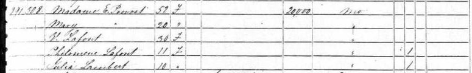
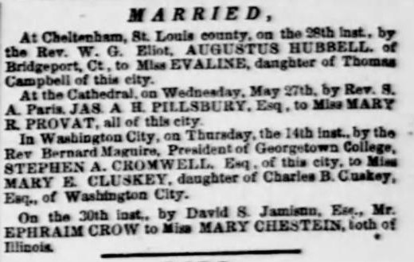
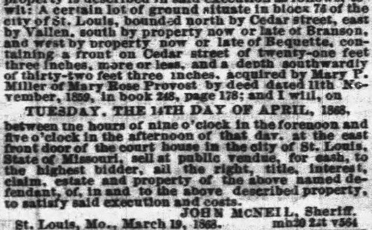
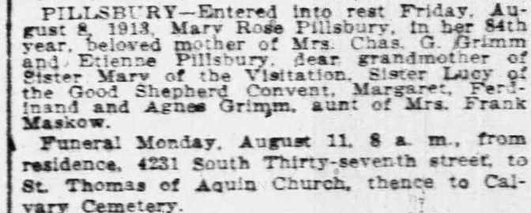
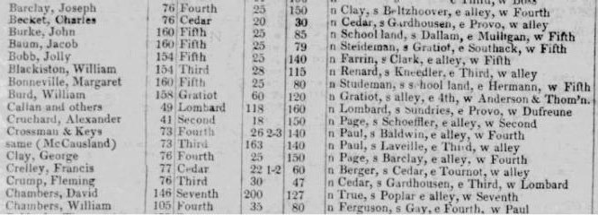
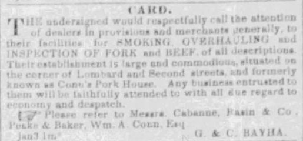
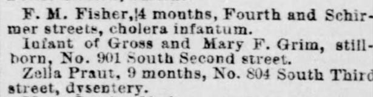
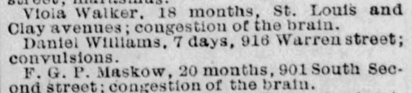
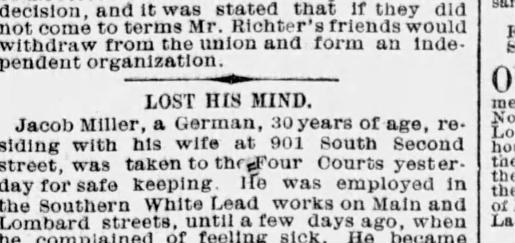
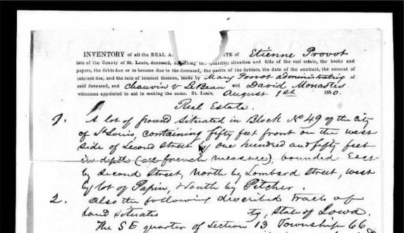

Étienne Provost n'a laissé ni journal ni lettre. On le connaît par les registres, les livres de compte de la traite, les souvenirs des autres. Cette salle réunit ces témoignages, un onglet par corpus, avec leur contexte, leurs découpures et les lieux dont ils parlent.
Dans les journauxVingt-six découpures de 1827 à 1960 : le tavernier de Saint-Louis, la nouvelle du rendez-vous de 1834, l'avis de décès de 1850, les souvenirs de Joseph La Barge, l'origine du nom de Provo, la statue du monument This Is the Place.
L'arbre de la familleLes trois mariages d'Albert Provost à Chambly, les quatorze frères et sœurs d'Étienne, son mariage avec Marie-Rose Lambert, puis la descendance Pillsbury et Grimm à Saint-Louis jusqu'en 1913.
La maison de la rue LombardOù Provost est mort : l'angle sud-ouest des rues Lombard et Second, l'îlot 49, devenu le 901 South Second Street, habité par sa descendance jusqu'en 1889, cartographié en 1908 et effacé par les voies du pont MacArthur.
Chambly, le pays d'ÉtienneLe fort, la paroisse Saint-Joseph et les seigneuries du Richelieu ; la famille d'Albert Provost ; les deux terres que la baronnie de Longueuil lui concède en 1781, et ce qu'il reste à trouver pour les situer exactement.
Le testament d'ÉtienneLe testament de 1839, signé d'une croix, qui lègue tout à Marie-Rose ; son rejet par le juge en 1850 ; l'inventaire de la maison, meuble par meuble ; le cercueil de velours, les terres de l'Iowa et les comptes de la veuve.
La mère de Mary RoseLe certificat de décès de 1913 donne pour mère à la fille de Provost une « Madelin Delor ». L'enquête mène à Marie-Rose Lambert, à sa mère Madeleine Delor, fille du fondateur de Carondelet, et à sa grand-mère María Rosa Villalpando, captive de Taos.
« Provot » dans les journaux
Dépouillement de Newspapers.com · 1800-1963 · Missouri, Iowa, Dakota, Utah et presse nationale
De son vivant, Étienne Provost n'apparaît dans la presse de Saint-Louis que par les petites colonnes de la vie civique : une lettre qui l'attend à la poste, une licence de taverne, un lot de terrain, un procès, un avis de décès. Une seule fois, en 1834, on parle de lui comme d'un homme des montagnes. Sa célébrité vient ensuite, quand l'Utah se cherche des fondateurs d'avant les pionniers mormons : le trappeur canadien de Saint-Louis devient l'homme qui a donné son nom à Provo, le découvreur possible du col du Sud et du Grand Lac Salé, et finit statue de bronze. Voici les articles retrouvés, avec leur découpure, leur contexte et le lieu dont ils parlent.
La méthode
J'ai interrogé l'index de Newspapers.com (abonnement de l'auteur) de 1800 à 1963 avec les graphies connues du nom : « Etienne Provost », « Etienne Provot », « Etienne Provo », « Etienne Proveau », « Etienne Prevost », « E. Provost » et « E. Provot » (avant 1851), « Stephen Provost », « Provost Fork », « Old Provost », « Provost and Leclerc », ainsi que Provost, Provot, Provo, Proveau et Provaut seuls dans la presse du Missouri d'avant 1851 et de l'Utah. Cela représente environ 5 000 pages. J'ai lu le passage autour du mot trouvé pour toutes les pages américaines et canadiennes (plus de 2 300), puis la page entière pour les articles pertinents. Les homonymes sont très nombreux : le prévôt des marchands Étienne Marcel, les maréchaux prévôts (provost marshal), les Provost du Québec, de la Nouvelle-Angleterre et de l'Australie, et la ville albertaine de Provost.
Saint-Louis et la vie civiqueles montagnes et le Missourila postérité (Utah) Pastille vide : position approximative ou hypothétique. Cliquez une pastille pour aller à l'article.
De son vivant : le Canadien de Saint-Louis (1827-1850)
Missouri Republican, 8 nov. 1827, p. 3.
Novembre 1827 · Saint-Louis — The Missouri Republican, 8 et 15 novembre 1827, p. 3 · page ↗
Ce que dit l'article. La liste des lettres en souffrance au bureau de poste de Saint-Louis porte, à la lettre P, « Etienne Proveau », juste sous « Gabriel Philibert », de la famille de Joseph Philibert avec qui Provost était parti vers l'Arkansas en 1814.
Contexte. C'est la plus ancienne mention sûre de Provost dans la presse. Il est revenu des montagnes en septembre 1826 ; à l'automne 1827, il est de nouveau à Saint-Louis, entre deux engagements. La graphie « Proveau » est celle qu'emploieront aussi Joseph La Barge et le peintre Miller.
Lieu : bureau de poste de Saint-Louis (fiche L03) · position approximative.
Missouri Republican, 1er mai 1834, p. 3.
1833-1834 · Saint-Louis — Missouri Republican, 17 mai 1833, p. 3, et 1er mai 1834, p. 3 · 1833 ↗ · 1834 ↗
Ce que dit l'article. Le compte rendu des recettes de la ville énumère les licences payées. « Provost, Etien » y figure deux fois : comme vendeur de marchandises (7,50 $) et pour une « taverne ou débit de boissons » (50 $). La liste de 1833 donne la même chose sous « Provost E. ».
Contexte. Ces deux lignes confirment ce que disaient les historiens à partir d'actes notariés : entre ses campagnes, Provost tient une épicerie-taverne à Saint-Louis (fiche L21). C'est l'année où il part avec la caravane de Fontenelle et Drips vers le rendez-vous de la Ham's Fork : la taverne tourne sans lui, sans doute grâce à Marie-Rose Lambert.
Lieu : Saint-Louis, premier quartier (fiche L21) · position approximative.
Missouri Republican, 26 août 1834, p. 3.
Été 1834 · Ham's Fork, Independence — Missouri Republican, 26 août 1834, p. 3 (« From the Mountains ») ; repris par le Missouri Intelligencer, 30 août 1834 · page ↗
Ce que dit l'article. Un voyageur arrivé la veille des montagnes fait savoir, « pour l'information des amis de ceux qui accompagnent M. Provost (de l'American Fur Company) », que son parti n'a pas été attaqué par les Pawnees au printemps, contrairement à la rumeur. Sublette et le capitaine Cerré arrivent avec leurs ballots de castor. Provost comptait quitter le rendez-vous de la Ham's Fork du Rio Colorado six ou sept jours après l'auteur, parti vers le 10 juillet. L'informateur venait de Fort Vancouver, quitté le 31 mai, et a atteint Independence le 16 août.
Contexte. C'est le seul article d'époque qui parle de Provost comme d'un chef de parti dans les montagnes. Il montre que des familles de Saint-Louis s'inquiétaient pour les engagés qu'il conduisait, et confirme sa présence au rendez-vous de 1834 (fiche L28).
Lieux : rendez-vous de la Ham's Fork (fiche L28) · position approximative ; Independence (Missouri) · position certaine.
St Louis Republic, 21 oct. 1843, et Weekly Jefferson Inquirer, 29 juin 1843.St Louis Republic, 5 févr. 1873, p. 7.St Louis Republic, 14 janv. 1846, p. 2.
1831-1873 · le premier quartier de Saint-Louis — listes fiscales et rôles de la cour
Ce que disent les articles. Les listes de taxes impayées publiées par la ville situent ses terrains :
1831 et 1834 : un lot de la rue Third, au voisinage d'un certain Gardhausen, est borné au sud par « Provost » (Missouri Republican, 8 mars et 19 avril 1831 ; 14 oct. 1834).
1843 : dans l'îlot 49 (rue Lombard), le lot de Francis Cailloux est borné « à l'est par Provost, au sud par Papin » ; dans l'îlot 76 (rue Cedar), un autre lot est borné à l'est par « Provo » (Weekly Jefferson Inquirer, 29 juin 1843 ; St Louis Republic, 21, 24 et 27 oct. 1843).
1845-1846 : Hector Moore, puis William Horine et Victoire Dabin poursuivent ensemble une dizaine de voisins créoles du quartier, dont Antoine et Michel Cailloux, les Dufresne, Francis Hernandez, Louis Martin et « Etienne Provost » ; les causes sont abandonnées ou reportées (St Louis Republic, 14 janv., 5 févr. et 11 mars 1846). En décembre 1845, la cour mentionne aussi « State vs Etienne Provot & Felix Lafre ».
1873 : une vente de fiduciaire décrit un lot de l'îlot 76 comme la moitié ouest d'un lot « vendu à Sarah Ann Langley par Etienne Provot et Marie Rose, sa femme, par acte du 18 mai 1835 » (St Louis Republic, 2-25 févr. 1873).
Contexte. Ces bribes dessinent le Frenchtown où Provost vit de 1830 à sa mort : quelques îlots au sud du vieux centre, entre les rues Second, Third, Lombard et Cedar, peuplés de familles créoles et canadiennes. Les procès de 1845-1846, qui visent tout un groupe de voisins à la fois, portent probablement sur un terrain ou une clôture communs.
Lieux : îlots 49 et 76 du premier quartier, près de l'angle Lombard-Second (nouvelle fiche L59 ; fiche L36) · positions approximatives.
The Hawk-Eye and Iowa Patriot (Burlington), 23 juillet 1840, p. 4.
1840-1852 · comté de Lee (Iowa) — The Hawk-Eye and Iowa Patriot, Burlington, 2 juillet-10 sept. 1840 (sept parutions) ; Democratic Banner, Davenport, mars-nov. 1852 · page 1840 ↗ · page 1852 ↗
Ce que dit l'article. Avis légal de la cour de district du comté de Lee, dans le territoire de l'Iowa : le 14 avril 1840, Josiah Spalding, Archibald Gamble, Patrick Walsh, « Etienne Prevost », John et Edward Walsh, John B. Sarpy, Antoine Leclaire et une vingtaine d'autres demandent le partage de « la Half Breed tract », environ 119 000 acres entre le Mississippi et la rivière Des Moines. Les défendeurs et tous les intéressés sont sommés de comparaître en octobre. En 1852, une vente du shérif exécute encore un jugement en faveur des mêmes requérants, Provost compris.
Contexte. La « Half-Breed Tract » avait été réservée en 1824 aux Métis des Sauks et des Renards. Dans les années 1830, spéculateurs et marchands de Saint-Louis rachètent les parts des Métis ou se les font céder en paiement de dettes. Ce document, inconnu des biographes, montre Provost parmi les ayants droit, au côté de bourgeois de la traite comme Sarpy et Gamble. Comment il a acquis ces droits, comme créancier ou par un lien familial, reste à chercher.
Lieu : ancienne réserve des Métis, entre Keokuk et Fort Madison (nouvelle fiche L60) · position approximative.
St. Louis Post-Dispatch, 12 avril 1891, p. 33 (titre et dernier paragraphe).Cascade Courier (Montana), 26 déc. 1919.
1843 · avec Audubon sur le haut Missouri — St. Louis Post-Dispatch, 12 avril 1891, p. 33 (« A Trip in '43 ») · page ↗ — et récit syndiqué dans une vingtaine d'hebdos du Montana et de l'Utah, 25 déc. 1919-23 janv. 1920 · page ↗
Ce que disent les articles. Le capitaine Joseph La Barge, pilote de l'Omega, raconte le voyage d'avril-juin 1843 avec Audubon et ses compagnons. Il termine en notant qu'Audubon resta à l'embouchure de la Yellowstone jusqu'à l'automne et redescendit en mackinaw « accompagné d'Etienne Proveau, le célèbre trappeur et chasseur ». Vingt-huit ans plus tard, une dépêche reprend une anecdote du même voyage : un assistant d'Audubon, appelé « Prou », se vantait de reconnaître toute plante à sa feuille ; Provost, « qui servait de guide », lui présente une feuille de maïs cueillie près d'un camp de Mandans. Le savant cherche en vain dans ses livres et devient la risée de l'équipage quand Provost dégage le grain à la racine.
Contexte. Le journal d'Audubon confirme que Provost chassa pour lui au fort Union et redescendit avec lui jusqu'à Saint-Charles (fiches L37 et L38). L'anecdote du maïs, absente du journal, vient sans doute de La Barge, qui aimait raconter. L'identité de l'« assistant » ainsi surnommé reste incertaine.
Lieux : fort Union (fiche L37) · position certaine ; villages mandans près de Fort Clark (nouvelle fiche L62) · position hypothétique.
Minneapolis Journal, 7 sept. 1903, p. 11.
1847 · Crow Creek (Dakota du Sud) — Minneapolis Journal, 7 sept. 1903, p. 11 (« Row with Redskins ») ; repris par l'Argus-Leader (Sioux Falls) et quatre hebdos du Wisconsin · page ↗
Ce que dit l'article. La société historique du Dakota du Sud vient de retrouver le récit d'un épisode oublié. En 1847, lors de son premier voyage comme maître de son propre vapeur, avec sa femme à bord, Joseph La Barge s'arrête à Crow Creek pour prendre le bois coupé par le commis Colin Campbell. Les Yanktons, mécontents de l'agent Matlock, interdisent aux bateliers de le charger et les frappent de leurs fouets de cuir cru jusqu'à ce qu'ils jettent le bois en désordre sur le pont. C'est alors qu'intervient « Etienne Provost, un frontalier intrépide dont les Indiens avaient peur » : le bois est chargé sans autre résistance. Le soir, les Yanktons envahissent le pont, tuent le batelier Charles Smith, et La Barge doit tirer au canon chargé de rivets.
Contexte. Provost a alors plus de soixante ans et remonte chaque printemps le Missouri pour l'American Fur Company (fiche L39). Le récit, publié un demi-siècle plus tard et tiré des souvenirs de La Barge, est le seul qui le montre en action dans ses dernières années.
Lieu : embouchure du Crow Creek sur le Missouri, comté de Buffalo (nouvelle fiche L61) · position approximative.
Tri-Weekly Missouri Republican, 4 juillet 1850, p. 2.
Tri-Weekly Missouri Republican, 30 juillet 1850, p. 2.
3 juillet 1850 · Saint-Louis — Tri-Weekly Missouri Republican, 4 juillet 1850, p. 2 · page ↗ — et 30 juillet 1850, p. 2, puis The Missouri Republican, 2 août-20 sept. 1850 (sept parutions) · page ↗
Ce que disent les articles. Sous « Died », entre deux faire-part, une ligne : « Hier après-midi, vers 4 heures, M. Etienne Provot, un vieux résident de cette ville. » Amis et connaissances sont invités aux funérailles le jour même à 16 h, depuis sa maison du coin des rues Lombard et Second, jusqu'au cimetière catholique. Quatre semaines plus tard, un avis informe les créanciers que les lettres d'administration de la succession d'« Etienne Provot » ont été accordées le 29 juillet 1850 par le juge de la Cour des successions de Saint-Louis à « Mary Provot », administratrice.
Contexte. Ces deux textes, cités en 1909 par l'abbé W. R. Harris (voir plus bas), fixent la date de la mort (3 juillet 1850), l'adresse de la maison et la graphie qu'employait la famille. L'administratrice est sa veuve, Marie-Rose. L'avis ne dit rien de la cause du décès.
Lieux : maison du coin des rues Lombard et Second (nouvelle fiche L59) · position approximative ; cimetière catholique (fiches L40, L55).
Les souvenirs (1880-1913)
St. Louis Globe-Democrat, 18 juillet 1880, p. 12.
1880 · Saint-Louis et le haut Missouri — St. Louis Globe-Democrat, 18 juillet 1880, p. 12 (« Death of Louis St. Onge ») · page ↗
Ce que dit l'article. La nécrologie du voyageur Louis St. Onge, mort à Sioux City, le range dans « cette héroïque bande de pionniers qui ouvrit au commerce, sous la direction de Pierre Chouteau, les sources du Missouri », avec William Archambault, Etienne Provost, Fred Dupuis, Joseph Picot, Charles Guérin, J. Pacquenolles, le capitaine Guion, Germain Pelletier et Paul Guitar.
Contexte. Trente ans après sa mort, la mémoire de Saint-Louis classe encore Provost parmi les engagés canadiens de la maison Chouteau, et non parmi les découvreurs. C'est le Provost du recruteur de l'American Fur Company (fiche L35).
Lieu : Saint-Louis (fiche L35) · position approximative.
Nebraska City Weekly, 24 juin 1902, p. 1.Salt Lake Herald, 25 déc. 1904, p. 17.
1823 · le col du Sud — The Nebraska City Weekly (The Conservative de J. Sterling Morton), 24 juin 1902, p. 1 · page ↗ — et Salt Lake Herald, 25 déc. 1904, p. 17 · page ↗
Ce que disent les articles. Dans sa série « Incidents of Western History », l'ancien secrétaire à l'Agriculture J. Sterling Morton se demande qui a ouvert la grande route de l'Ouest. Il note que la tradition des trappeurs attribuait depuis longtemps le passage du col du Sud à « Etienne Provost, d'après qui la ville de Provo en Utah fut nommée », qui y aurait conduit un parti d'Ashley et d'Henry en 1823 ; et puisqu'on ne peut ni le prouver ni le réfuter, conclut-il, « il n'y a pas de raison de lui refuser la gloire ». En décembre 1904, à l'occasion du monument de Jim Bridger à Kansas City, le Salt Lake Herald écrit qu'à l'automne 1823 Ashley envoya un nouveau parti sous Étienne Provost, « trappeur et traiteur réputé », par la Bighorn et la Wind jusqu'à la Green, et que ce parti, où se trouvait Bridger, découvrit le col.
Contexte. Ces textes lancent une idée que la presse répétera pendant soixante ans : Provost, découvreur probable du col du Sud. Les historiens donnent plutôt la traversée de 1824 au parti de Jedediah Smith et Thomas Fitzpatrick, guidé par des Crows (fiche L17). Le même article de 1904 paraît aussi dans le Globe-Democrat, le Kansas City Star et l'Omaha Bee.
Lieux : col du Sud (fiche L17) · position certaine ; monument de Bridger, cimetière Mount Washington (nouvelle fiche L63).
Intermountain Catholic, 30 janv. 1909, p. 1 et suite.The Daily Herald (Provo), 26 févr. 1924, et Salt Lake Tribune, 27 févr. 1924.
Provo, Provot, Provost · le nom — The Intermountain Catholic (Salt Lake City), 30 janv. 1909 · page ↗ ; The Daily Herald (Provo), 26 févr. 1924 · page ↗ ; Salt Lake Tribune, 27 févr. 1924 · page ↗ ; E. S. Watson, « Two Names on Utah's Map », 1934-1937 · page ↗
Ce que disent les articles.
1909. Dans sa série « Catholic Church in Utah », l'abbé W. R. Harris consacre un long article à « Etienne Provot, guide, trappeur, chasseur ». Il a fouillé le dossier de la succession à Saint-Louis : le nom y est « Provot, et non Provost ». Il cite l'avis de décès du 4 juillet 1850, nomme la veuve, « Marie Rose Salle dit Lajoie », et en conclut que le t muet explique la forme « Provo » donnée à la ville, à la vallée et à la rivière.
1924. La parution du livre de J. M. Jensen, The Early History of Provo, est saluée par le Daily Herald de Provo d'un encadré « He Named Provo » orné d'un portrait dessiné de fantaisie, et par une dépêche reprise dans tout l'Utah : employé en 1822 par la Rocky Mountain Fur Company, Provot aurait été le premier Blanc à passer le col du Sud et à pénétrer dans la région du Grand Lac Salé, où son parti fut décimé par les Indiens en 1824.
1934-1937. Dans sa série syndiquée « Fifty Famous Frontiersmen », reprise par une vingtaine de journaux, le journaliste Elmo Scott Watson présente « deux noms sur la carte de l'Utah » : Provot et Ogden. Il note que Provot a peut-être vu le lac avant Bridger et passé le col avant Fitzpatrick, et que le site de la ville qui porte son nom fut « baptisé dans le sang ».
Contexte. C'est la presse de l'Utah, catholique puis mormone, qui fait de Provost un personnage public. L'article de Harris est le premier à établir la filiation entre le nom de la ville et la graphie familiale « Provot ». Le portrait de 1924, repris ensuite, est une invention : aucun portrait de Provost n'est connu.
Idaho State Journal, 8 déc. 1955 : Dan'l Hale, par Norman Marsh.
Octobre 1824 · le guet-apens — Deseret News, 24 juillet 1912 · page ↗ ; Salt Lake Tribune, 25 juillet 1912 (« Instance of Treachery ») ; bande dessinée Frontier Scout / Dan'l Hale, février-décembre 1955 et 1956-1958 · page ↗
Ce que disent les articles. Pour le Pioneer Day de 1912, le Deseret News publie « The Coming of Provot » : venu de Saint-Louis par le Colorado, Provot entre en Utah par la Green en 1823 ; campé près de l'embouchure de la Provo, il reçoit un chef snake-ute nommé Mauvaise Gauche et une trentaine de guerriers ; le chef propose de fumer le calumet, mais exige qu'on dépose les armes, le fer chassant son esprit gardien ; au signal, ses hommes tirent couteaux et tomahawks ; Provot et quelques hommes s'échappent. En 1955, la bande dessinée Dan'l Hale de Norman Marsh, publiée dans une dizaine de quotidiens, consacre plusieurs mois à « Etienne Provot et François Leclerc » : départ de Saint-Louis en 1822, hiver sur la Strawberry, descente du canyon de la Provo, puis le massacre, avec cette légende : « sur ce sol se dresse aujourd'hui la ville de Provo, nommée d'après Étienne Provot, qui survécut au massacre ».
Contexte. Le récit reprend pour l'essentiel celui des historiens (fiche L11). La presse le situe au bord de la Provo, alors que les sources anciennes parlent plutôt de la rivière Jordan. La bande dessinée de 1955 est la forme la plus populaire jamais donnée à la vie de Provost.
Lieux : rivière Jordan (fiche L11) · position approximative ; Provo (fiche L42).
Août 1913 · Saint-Louis — St. Louis Globe-Democrat, 31 août 1913 (« Death Recalls Pioneer Days ») · page ↗
Ce que dit l'article. La mort de Mary Rose Pillsbury, 83 ans, attire de nombreuses condoléances chez son gendre Charles G. Grimm, 4231 South 37th Street. Veuve de James A. H. Pillsbury, épousé à la Vieille Cathédrale en 1857, elle était « Miss Mary Rose Provost, fille d'Étienne Provost, attaché à l'American Fur Company, qui avait la réputation d'un explorateur audacieux des Rocheuses ». Le journal la dit arrière-petite-fille de Clément Delor de Treget, premier commandant de Carondelet. Le sermon funèbre est prononcé par le père Jones, curé de Saint-Thomas-d'Aquin.
Contexte. Cette nécrologie, qui complète la fiche L43, est la seule trace de presse de la descendance directe de Provost. Elle rattache la famille de Marie-Rose aux Delor de Treget, fondateurs de Carondelet, un lien à vérifier dans les registres.
Lieu : maison de Charles G. Grimm, sud de Saint-Louis (fiche L43) · position approximative.
La statue (1926-1960)
Ogden Standard-Examiner, 13 juillet 1941.
Hiver 1824-1825 · Ogden — Ogden Standard-Examiner, 13 juillet 1941 (« Ogden Locale for Trapper Confabs »), repris en 1942 et 1946 · page ↗
Ce que dit l'article. D'après J. Cecil Alter, auteur d'une biographie de Jim Bridger, une alcôve abritée juste au nord du site actuel d'Ogden aurait été le refuge d'hiver d'Étienne Provot et de ses hommes en 1824-1825, puis le quartier d'hiver des trappeurs d'Ashley en 1825-1826 et le lieu du rendez-vous d'été de 1826.
Contexte. C'est l'hypothèse d'Alter ; la plupart des historiens placent l'hiver de Provost au bord du lac Utah (fiche L13). L'article montre comment chaque ville de l'Utah cherche à s'approprier le passage des trappeurs.
Lieu : au nord d'Ogden (nouvelle fiche L65) · position hypothétique.
Deseret News, 24 juillet 1947, p. 1.Salt Lake Tribune, 27 mai 1960.
1926-1960 · Salt Lake City et Provo — Salt Lake Tribune, 26 août 1926 · page ↗ ; Sunday Herald (Provo), 15 déc. 1946 · page ↗ ; Deseret News, 24 juillet 1947 · page ↗ ; Salt Lake Tribune, 27 mai 1960 · page ↗
Ce que disent les articles.
1926. Pour le centenaire de leur entrée dans la vallée, le chapitre Spirit of Liberty des Daughters of the American Revolution dévoile un monument avec plaque en l'honneur de James Bridger, Jedediah Smith et Étienne Provot, au nouveau parc municipal en face de l'hôpital St. Mark's ; la femme du gouverneur Dern le dévoile, l'historien J. Cecil Alter fait le discours.
1946. Le monument This Is the Place, prévu pour le centenaire de l'arrivée des Mormons, recevra sur sa face est une statue de bronze de sept pieds d'Étienne Provot, l'une de six figures d'avant les pionniers. Pour lui faire place, explique le secrétaire John D. Giles, on a retiré Kit Carson du projet : Provot était « plus étroitement associé à l'histoire de l'Utah ».
1947. Au dévoilement du 24 juillet 1947, le groupe de la face est est dévoilé par Charles Washakie, fils du chef shoshone, et par « l'évêque E. Orval Provost, petit-neveu d'Étienne Provost ».
1960. La State Bank of Provo inaugure un immeuble moderniste dont le hall abrite une statue contemporaine d'Étienne Provot.
Contexte. En vingt ans, le trappeur de Saint-Louis devient l'un des « pères » non mormons de l'Utah. La présence d'un petit-neveu au dévoilement de 1947 suggère qu'une branche de la famille Provost de Chambly s'était établie en Utah, une piste généalogique à suivre. La statue de 1947 se voit toujours au monument (fiche L44) ; celle de la banque n'a pas été retrouvée.
Lieux : plaque de 1926 (nouvelle fiche L64) · position hypothétique ; monument This Is the Place (fiche L44) · position certaine ; State Bank of Provo (nouvelle fiche L66) · position approximative.
L'écho dans la presse, décennie par décennie
Au-delà des articles ci-dessus, Provost revient sans cesse dans la presse de l'Utah et dans les séries syndiquées. Ces mentions, souvent brèves, montrent comment son image se fixe.
Années
Ce que répète la presse
Exemples
1907-1911
Un article syndiqué sur les pionniers du Missouri le dit « découvreur probable du col du Sud ». Le Globe-Democrat revendique pour un « autre Saint-Louisien » la gloire d'avoir ouvert la région du Lac Salé.
Buffalo Enquirer, Inter Ocean, Idaho Press, LA Times (1907-1909) ; St. Louis Globe-Democrat, 30 août 1908
1919-1931
Dépêches nationales sur les hommes d'Ashley : « Etienne Provot » figure parmi les « cent jeunes gens entreprenants » de 1822, avec Bridger, Fitzpatrick et les Sublette ; « la ville de Provo perpétue sa renommée ».
Une quarantaine d'hebdos en 1925-1926, autant en 1927 et en 1931
1928-1949
Débats sur le premier Blanc au Grand Lac Salé et au lac Utah ; spectacles historiques à Provo (1932, 1936), questionnaires scolaires, chroniques du centenaire de Provo (1949) : « Etienne Provot (prononcez Provo) entra dans la vallée en 1824 ».
SL Telegram, 8-9 nov. 1928 ; Daily Herald, 28-30 juin 1932 ; Deseret News, 30 juin 1949
1937
La presse danoise d'Omaha explique à ses lecteurs que la ville de Provo porte le nom d'Étienne Provot.
Den Danske Pioneer, 11 nov. 1937
1955-1958
Bande dessinée Frontier Scout / Dan'l Hale : Provot et François Leclerc, l'hiver sur la Strawberry, le massacre, la rencontre avec Ogden (« M'sieu Ogden, je suis Étienne Provot ! »).
Dépêches dans une quarantaine d'hebdos de l'Utah : Bridger et Provost, « deux des trappeurs les plus célèbres de l'Ouest », premiers à voir le Grand Lac Salé à l'hiver 1824-1825.
Hebdos de l'Utah, févr.-mars 1960
Ce que la presse ne dit pas
Rien de ses grandes campagnes, sur le moment. Aucun journal de Saint-Louis ne rapporte, au moment des faits, ses prisons de Santa Fe, le massacre de 1824, la rencontre avec Ashley en 1825 ou l'expédition Nicollet de 1839. Seul l'article d'août 1834 parle de lui comme d'un homme des montagnes.
Les mentions de 1833-1849 sont peu nombreuses et éparses. La presse de Saint-Louis d'avant 1850 n'est numérisée que partiellement, et la reconnaissance de texte y est souvent mauvaise.
Environ 740 pages de l'Utah ne répondent qu'à « Provot » seul. C'est souvent une mauvaise lecture de « Provo ». Elles n'ont pas été lues une à une.
Homonymes écartés
Étienne Marcel, « prévôt des marchands » de Paris (des centaines de pages, jusqu'à une pièce de théâtre à Brooklyn en 1926) ; Étienne Boileau, prévôt de Paris ; les maréchaux prévôts (provost marshal) ; Sir George Prevost ; Baptiste Janot Provost de Saint-Charles (1816-1818) ; un juge Provost de Valparaiso (1818-1820) ; Joseph Provo, journalier de la ville de Saint-Louis (1827) ; la maison de pickles Wells, Miller & Provost de New York, dont les réclames inondent la presse de 1850 ; Gen. A. M. Provost de Philadelphie ; E. J. Provot de Beaver Dam (Wisconsin), assidu de la chronique mondaine de 1927 à 1937 ; L. Vane Provost d'American Fork (Utah), annonceur de 1960 ; les nombreux Provost du Québec et de l'Ontario ; et la ville de Provost (Alberta).
Sources
The Missouri Republican (Saint-Louis), 8 et 15 nov. 1827 ; 8 mars et 19 avril 1831 ; 17 mai 1833 ; 1er mai, 26 août et 14 oct. 1834 ; 2 août-20 sept. 1850. Tri-Weekly Missouri Republican, 4 et 30 juillet 1850.
The St Louis Republic, 21-27 oct. 1843 ; 1er-25 déc. 1845 ; 14 janv., 5 févr., 11 mars 1846 ; 2-25 févr. 1873. Weekly Jefferson Inquirer, 29 juin 1843.
The Hawk-Eye and Iowa Patriot (Burlington), 2 juillet-10 sept. 1840 ; Democratic Banner (Davenport), 26 mars-19 nov. 1852.
St. Louis Globe-Democrat, 18 juillet 1880 ; 18 déc. 1904 ; 30 août 1908 ; 31 août 1913. St. Louis Post-Dispatch, 12 avril 1891.
The Nebraska City Weekly, 24 juin 1902 ; Minneapolis Journal, 7 sept. 1903 ; Salt Lake Herald, 25 déc. 1904.
The Intermountain Catholic, 30 janv. 1909 ; Deseret News, 24 juillet 1912, 24 juillet 1947 ; Cascade Courier, 26 déc. 1919 (et autres hebdos du Montana).
The Daily Herald (Provo), 26 févr. 1924 ; Salt Lake Tribune, 27 févr. 1924, 26 août 1926, 27 mai 1960 ; Sunday Herald (Provo), 15 déc. 1946 ; Ogden Standard-Examiner, 13 juillet 1941.
E. S. Watson, « Fifty Famous Frontiersmen : Two Names on Utah's Map », JG-TC (Mattoon, Illinois), 24 janv. 1934 et autres journaux ; N. Marsh, Dan'l Hale, Idaho State Journal, 8 déc. 1955 et autres journaux.
Tous les articles ont été consultés sur Newspapers.com (abonnement de l'auteur), le 20 novembre 2026. Les découpures sont des captures d'écran des pages numérisées.
L'arbre de la famille
Registres de Chambly, de Saint-Louis et recensements américains · arbre Ancestry « Étienne Provost (1785-1850) – Atlas Provost », novembre 2026
Étienne Provost est le fils d'un cultivateur de Chambly marié trois fois, l'aîné d'un dernier lit de six garçons. Il quitte la vallée du Richelieu sans savoir écrire et n'y revient pas. À Saint-Louis, il épouse à 43 ans la fille de son associé, petite-fille d'une captive du Nouveau-Mexique et du fondateur de Carondelet ; une seule de leurs filles vit, et sa lignée se poursuit chez les Pillsbury, puis chez les Grimm, dans le sud de la ville.
Comment l'arbre a été établi
J'ai repris un à un, dans la collection Drouin sur Ancestry, les actes de la paroisse Saint-Joseph de Chambly qui nomment Albert Provost : ses trois mariages, les baptêmes et sépultures de ses enfants, sa propre sépulture. Pour Saint-Louis, j'ai croisé les registres français de la collection Drouin (mariage de 1829, baptême de Marianne), le livre de Gilles Havard, l'avis de décès de 1850 et les recensements fédéraux de 1860, 1880, 1900 et 1910, qui suivent Mary Rose de foyer en foyer jusqu'à sa mort en 1913. L'arbre complet, avec la source de chaque date en note, est déposé sur Ancestry ; il est privé pour l'instant.
Gabriel Provost× Marie-Anne Bourassa
Albert Provostvers 1750 – inhumé à Chambly le 5 mars 1796, 46 ans · cultivateur
× (1) Marie-Louise Paquet, Chambly, 29 janvier 1770
× (3) Marie-Anne Mainard (Ménard), Chambly, 25 janvier 1785
Étienne Provostné et b. à Chambly le 21 décembre 1785 – mort à Saint-Louis le 3 juillet 1850
× une femme crow, vers 1828 ? (tradition rapportée par Vaugeois)
Nicolas ? non documenté
× Marie-Rose Lambert (Salé dit Lajoie), vieille cathédrale de Saint-Louis, 4 août 1829vers 1797 – 1873 · fille de Lambert Salé dit Lajoie et de Madeleine Delor (voir l'onglet « La mère de Mary Rose »)
Mary Rose Provost1er mai 1830 – 8 août 1913, inhumée au cimetière Calvary
× James A. H. Pillsbury, 1857né vers 1827 au New Hampshire · épicier (1860), courtier retiré (1880)
Mary Frances Pillsburyvers 1860
× Charles G. Grimm, vers 1881né vers 1858 au Missouri · caissier de brasserie (1910)
Mary E. vers 1885
Clara E. vers 1888
Margaret M. A. vers 1894
Ferdinand vers 1898
Agnes Maria 1900
Etienne A. Pillsburyvers 1862 – 1927
Marianne 21 septembre 1833 – juin 1834 (choléra)
Toussaint b. 26 juin 1787 · × Émilie Robert, Chambly, 29 septembre 1806
Julien b. 15 janvier 1789 · × Josephte Fréchette, Chambly, 9 août 1813
Antoine b. 9 juin 1790
Raphaël b. 3 juin 1791 – 22 juillet 1791
François b. 7 septembre 1792 – 1er octobre 1792
b. : baptême. Les dates de naissance « vers » viennent de l'âge déclaré aux recensements. Une Celestine Pillsbury de 12 ans vit chez James et Mary Rose en 1860 : nièce ou fille d'un premier lit de James, son lien n'est pas établi et elle n'est pas placée dans l'arbre.
La famille de Marie-Rose
Marie-Rose Lambert, l'épouse d'Étienne, est la fille de Lambert Salé dit Lajoie et de Madeleine Delor, la petite-fille de María Rosa Villalpando, captive enlevée à Taos en 1760, et de Clément Delor de Tréget, fondateur de Carondelet. Son histoire, l'énigme du certificat de décès de sa fille et les actes qui la résolvent ont leur propre onglet : La mère de Mary Rose.
Ce que l'arbre apprend
Un fils du troisième lit. Les biographes parlaient d'un père « d'une quinzaine d'enfants » : les registres en donnent quatorze, nés de deux mères sur vingt-deux ans. Étienne est l'aîné du dernier mariage ; ses six demi-frères et demi-sœurs aînés encore vivants ont entre quatre et douze ans à sa naissance. Quand Albert meurt en mars 1796, à 46 ans, Étienne en a dix, et sa mère reste avec quatre garçons de moins de onze ans. Cette situation de cadet d'une famille recomposée, sans terre à attendre, éclaire son départ précoce vers la traite.
Des frères restés sur le Richelieu. Toussaint se marie à Chambly en 1806, Julien en 1813. Leurs actes nomment bien « Albert Provôt » et « Marie-Anne Ménard » (ou Minard) : ce sont les seuls frères d'Étienne dont la vie adulte est attestée. C'est par l'un d'eux, sans doute, que descend l'évêque E. Orval Provost, qui se disait petit-neveu du trappeur en 1947 (onglet « Dans les journaux »).
Une descendance urbaine et catholique. À Saint-Louis, la lignée passe par les femmes. Mary Rose épouse un épicier yankee du New Hampshire, puis vit chez sa fille, mariée à Charles G. Grimm, caissier de brasserie né au Missouri. Le prénom d'Étienne survit chez son petit-fils, Etienne A. Pillsbury, mort en 1927. En 1913, les journaux de Saint-Louis présentent encore Mary Rose comme la fille d'« un explorateur audacieux » de l'American Fur Company.
Les lieux de la famille dans l'atlas
Chambly : L01 (naissance d'Étienne) et L67 (la famille d'Albert Provost) · Saint-Louis : L24 (mariage de 1829), L25 (naissance de Mary Rose), L68 (les Pillsbury, 1857-1880), L69 (les Grimm, 1881-1913), L70 (Carondelet et les Delor de Tréget), L71 (Taos et María Rosa Villalpando), L43 (mort de Mary Rose, 1913).
Questions ouvertes
Le premier mari de Marie-Rose Lambert, mort à l'automne 1828, reste à identifier (Joseph Gibault, marié à une « Marie Salé » en 1813, est une piste).
La date du mariage de Madeleine Delor avec Lambert Salé, le sort de François Cailhol, et la date de naissance de Madeleine (vers 1759 d'après sa sépulture, 1766 d'après les arbres en ligne).
Le baptême de Mary Rose (1830) n'apparaît pas dans l'index Drouin de Saint-Louis, et son certificat de décès lui donne pour mère sa grand-mère, Madeleine Delor.
La date de mort de Marie-Louise Paquet et de Magdeleine Lebeau, et la date et le lieu de mort de Marie-Anne Mainard, mère d'Étienne.
L'union crow et le fils Nicolas ne reposent que sur la tradition.
Le destin des demi-frères Albert, Joseph, Charles et Pierre, et des frères Antoine, Toussaint et Julien après 1813.
Sources
Drouin, Quebec, Canada, Vital and Church Records (Drouin Collection), 1621-1968, paroisse Saint-Joseph de Chambly : mariages du 29 janvier 1770, du 2 juin 1783, du 25 janvier 1785, du 29 septembre 1806 et du 9 août 1813 ; baptêmes de 1771 à 1792 ; sépultures de 1773, 1784, 1791, 1792 et du 5 mars 1796. Ancestry, consulté le 20 novembre 2026.
Drouin, U.S., French Catholic Church Records (Drouin Collection), 1695-1954, Saint-Louis : mariage Étienne Provost – Marie Lambert (1829) ; baptême de « Maryanne Provots » (1833). Ancestry.
Missouri State Board of Health, certificat de décès n° 27938, Mary Rose Pillsbury, 8 août 1913 (Drive de l'auteur) ; St. Louis Star and Times, 10 août 1913 ; St. Louis Globe-Democrat, 31 août 1913 ; St. Louis Post-Dispatch Obituary Index (Etienne A. Pillsbury, 1927).
Tri-Weekly Missouri Republican, 4 juillet 1850, p. 2 (avis de décès d'Étienne Provost). Newspapers.com.
Havard, Gilles (2019), L'Amérique fantôme, Paris, Flammarion, ch. 8 ; Vaugeois, Denis, Le Devoir, 16 février 2002.
Saint-Louis, vieille cathédrale (Drouin) : mariage Cailhol – Delor, 31 décembre 1781 ; mariage Gibault – Salé renouvelé le 19 mars 1818 ; sépulture de María Rosa Villalpando, 28 juillet 1830 ; sépulture de « Mme Lambert Lajoie », 3 février 1837. Missouri, U.S., Compiled Marriages, 1754-1850. Ancestry, consultés le 20 novembre 2026.
Tykal, Jack B. (1990), « Taos to St. Louis: The Journey of Maria Rosa Villalpando », New Mexico Historical Review, 65 (2), p. 162-167 ; Brooks, James F. (2002), Captives and Cousins, University of North Carolina Press ; Wikipédia, « Maria Rosa Villalpando » ; Chemins de la francophonie, « Carondelet, a Fathers' Rendez-vous ».
Marie-Rose Lambert, dite Salé dit Lajoie, épouse d'Étienne Provost (vers 1797-1873) · enquête dans les registres de Saint-Louis, novembre 2026
En 1913, l'État du Missouri enregistre la mort de Mary Rose Pillsbury, fille d'Étienne Provost. Son certificat lui donne pour mère une certaine « Madelin Delor ». Ce nom ne correspond pas à l'épouse connue de Provost. L'enquête dans les registres de la vieille cathédrale de Saint-Louis résout l'énigme : Madeleine Delor est la grand-mère de Mary Rose. Elle révèle aussi l'ascendance remarquable de la vraie mère, Marie-Rose Lambert, petite-fille d'une captive du Nouveau-Mexique et du fondateur de Carondelet.
Missouri State Board of Health, Bureau of Vital Statistics, certificat de décès n° 27938 (enregistrement n° 7234), Mary Rose Pillsbury, Saint-Louis, 8 août 1913. Cliquez pour agrandir.
Ce que dit le certificatRempli le 8 août 1913, déposé le 9 août
Défunte : Mary Rose Pillsbury, femme blanche, veuve, morte au 4231 South 37th Street (13e quartier).
Naissance : 1er mai 1830, à Saint-Louis ; âge : 83 ans, 3 mois, 7 jours. Occupation : travaux ménagers.
Père : « Etienne Provo », né au Canada.
Nom de jeune fille de la mère : « Madelin Delor », née à Saint-Louis.
Cause du décès : artériosclérose, avec débilité sénile ; soignée depuis le 5 mars 1913 par le Dr John C. Lebrecht.
Informateur : « Chas. G. Grimm », 4231 South 37th Street.
Inhumation : cimetière Calvary, 11 août 1913 ; entrepreneur Frank Hettlage, 907 Chouteau Avenue.
Le père est exact, la date et le lieu de naissance concordent avec le mariage de ses parents (4 août 1829) et les recensements. Seul le nom de la mère pose problème : l'épouse d'Étienne s'appelle Marie-Rose Lambert, ou Salé dit Lajoie, jamais Madeleine Delor.
La solution : l'acte de mariage de 1829
Le registre des mariages de la vieille cathédrale répond. Le 4 août 1829, le jésuite Joseph Anthony Lutz y unit « Etienne Provost, fils d'Albert Provost et Marianne Menard, d'une part, et Marie Lambert, fille de Lambert Salé, dit Lajoy, et Magdeleine Delor, d'autre part ». Étienne, qui ne sait pas écrire, fait sa marque ; parmi les témoins signent le père de la mariée (« Lajoye ») et son frère, Clément Lambert.
Saint-Louis, vieille cathédrale, 4 août 1829 : mariage d'Étienne Provost et de Marie Lambert, « fille de Lambert Salé, dit Lajoy, et Magdeleine Delor ». Drouin, registre des mariages 1828-1836, image 15.
Madeleine Delor est donc la mère de Marie-Rose, et la grand-mère maternelle de Mary Rose. Le certificat a sauté une génération.
Trois générations de Rose
Génération
Personne
Dates
Lien avec la défunte de 1913
Arrière-grand-mère
María Rosa Villalpando, épouse de Jean Salé dit Lajoie
vers 1738 – 1830
mère de Lambert Salé, son grand-père
Grand-mère
Madeleine Delor, épouse de Lambert Salé dit Lajoie
vers 1759/1766 – 1837
la « Madelin Delor » du certificat
Mère
Marie-Rose Lambert, épouse d'Étienne Provost
vers 1797 – 1873
la vraie mère
Fille
Mary Rose Provost, épouse de James A. H. Pillsbury
1830 – 1913
la défunte
Madeleine Delor ne peut pas être la mère : mariée une première fois en 1781, elle a entre 64 et 71 ans en 1830, et elle est la femme de Lambert Salé, inhumée en 1837 sous le nom de « Mme Lambert Lajoie ».
Pourquoi l'erreur ?
Ce n'est pas Mary Rose qui a donné ce nom : elle venait de mourir. L'informateur est Charles G. Grimm, mari de sa petite-fille Mary Frances Pillsbury, chez qui elle vivait. Aucun document ne dit pourquoi il s'est trompé, mais trois raisons se combinent probablement :
Un informateur éloigné de deux générations. Né vers 1858 dans une famille sans lien avec les Salé et les Delor, Grimm avait environ quinze ans à la mort de Marie-Rose, en 1873. Il répondait de mémoire, le jour du décès. Les noms des parents inscrits sur le certificat d'une personne très âgée sont notoirement fragiles, et le saut de génération est une erreur fréquente.
Une mère sans nom de jeune fille fixe. Marie-Rose est tour à tour Lambert, Salé, Lajoie, Salle, Lombard. « Lambert » est en réalité le prénom de son père, porté comme nom par ses enfants, comme par son frère Clément Lambert. « Delor », au contraire, était un patronyme stable et prestigieux : celui du fondateur de Carondelet. C'est sans doute le nom resté dans la mémoire familiale comme le nom français de la lignée maternelle. Trois semaines plus tard, le Globe-Democrat présente d'ailleurs la défunte comme l'arrière-petite-fille de Clément Delor, « premier commandant civil et militaire de Carondelet ».
Une grand-mère que Mary Rose a connue. Madeleine Delor meurt en février 1837 dans le vieux Saint-Louis, quand Mary Rose a six ans. Son souvenir, ou un papier de famille à son nom, a pu se transmettre jusqu'en 1913 et se confondre avec celui de la mère.
Ce que l'on sait de Marie-Rose Lambert
Naissance : vers 1797-1798 à Saint-Louis ou dans les environs (52 ans au recensement de 1850 ; douze ans de moins qu'Étienne selon Havard). Son baptême n'a pas encore été retrouvé.
Famille : fille de Lambert Salé dit Lajoie (1768-1834), associé d'Étienne, et de Madeleine Delor. Sœur, entre autres, de Clément Lambert, qui tient en 1845 un café au coin des rues Second et Lombard et qu'Audubon appelle le beau-frère de Provost ; de Marie-Gertrude (épouse Lafont en 1827) et de Caroline (épouse Geoffroy en 1812).
Premier mariage : elle est veuve depuis l'automne 1828 quand Provost rentre de l'Ouest (Havard). Le premier mari reste à identifier ; une « Marie Salé » épouse Joseph Gibault le 29 novembre 1813, union renouvelée devant Mgr Dubourg le 19 mars 1818, mais rien ne prouve encore qu'il s'agit d'elle.
Mariage avec Étienne Provost : 4 août 1829, vieille cathédrale. Provost achète pour la noce couvertures, casinette, étoffe écarlate et dentelle d'argent ; dès l'été 1829, Marie-Rose figure comme créditrice dans les livres de l'American Fur Company (Havard).
Enfants : Mary Rose, née le 1er mai 1830 ; Marianne, née le 21 septembre 1833, morte du choléra en juin 1834.
Propriétaire : le 18 mai 1835, « Etienne Provot et Marie Rose, sa femme » vendent la moitié d'un lot de l'îlot 76 à Sarah Ann Langley ; l'acte est encore rappelé dans une vente de 1873.
Veuve et administratrice : Étienne meurt le 3 juillet 1850 dans leur maison, au coin des rues Lombard et Second. Le 29 juillet, la Cour des successions accorde les lettres d'administration à « Mary Provot ». Le recensement du 24 juillet 1850 l'inscrit comme « Madame E. Provost », 52 ans, née au Missouri, avec 20 000 $ de biens immobiliers : une fortune pour l'époque. Avec elle vivent sa fille Mary, 20 ans, une Lafont de 30 ans, Philomène Lafont, 11 ans, et Julia Lambert, 10 ans, sans doute des parentes du côté Salé.
Mort : 1873 à Saint-Louis, selon Havard. L'acte de sépulture reste à lire.

Recensement fédéral, Saint-Louis, 2e quartier, 24 juillet 1850 : « Madame E. Provost », 52 ans, 20 000 $ de biens immobiliers ; Mary, 20 ans ; Lafont, 30 ans ; Philomene Lafont, 11 ans ; Julia Lambert, 10 ans.Missouri Republican, 30 juillet 1850 : lettres d'administration de la succession d'Étienne Provot, signé « Mary Provot, Adm'x ».St. Louis Republic, 5 février 1873 : rappel de l'acte du 18 mai 1835 signé par « Etienne Provot et Marie Rose, sa femme ».
Mary Rose dans les documents
Aucun portrait de Mary Rose n'a été retrouvé : ni dans les photos versées par les membres d'Ancestry, ni dans les 68 arbres qui la mentionnent, ni sur Find a Grave, dont les deux images montrent la coupure de 1913 et sa parcelle du cimetière Calvary (« Mary Pillsbury est aussi inhumée dans cette parcelle mais n'a pas de pierre »). La presse et les registres permettent en revanche de suivre sa vie, et celle de sa mère, de 1830 à 1913.
Date
Document
Ce qu'il dit
1er mai 1830
Certificat de décès de 1913
Naissance à Saint-Louis, fille d'« Etienne Provo ».
1843
Journal d'Audubon
Provost a emmené sa fille, d'environ treize ans, sur le vapeur Omega jusqu'au fort Union.
24 juillet 1850
Recensement fédéral
« Mary », 20 ans, chez sa mère, « Madame E. Provost ».
octobre 1856
Liste des lettres en souffrance, Missouri Republican
Une lettre attend « Mrs. Provot » à la poste.
27 mai 1857
Missouri Republican, 1er juin 1857
Mariage à la cathédrale, par le Rév. S. A. Paris, de « Jas. A. H. Pillsbury, Esq. » et de « Miss Mary R. Provat ».
11 novembre 1859
Vente du shérif, Missouri Democrat, mars-avril 1868
Un lot de l'îlot 76, rue Cedar, a été acquis de « Mary Rose Provost » par acte du 11 novembre 1859 : sans doute la mère, veuve, qui vend une parcelle du patrimoine d'Étienne.
1860-1880
Recensements
Mme Pillsbury, avec son mari épicier puis courtier, et leurs enfants Mary Frances et Etienne A. ; au 900 Third Street en 1880.
24 décembre 1883
St. Louis Republic, 25 décembre 1883
Licence de mariage de son fils Etienne A. Pillsbury et de Miss Elizabeth Amplemen.
18 novembre 1889
St. Louis Globe-Democrat, 19 novembre 1889
Mort de son mari, « Jas. A. Pillsbury », 62 ans ; funérailles de leur maison du 901 South Second Street à l'église de l'Annonciation.
1900-1910
Recensements
Veuve, elle vit chez sa fille et son gendre Charles G. Grimm.
8 août 1913
Certificat de décès ; avis des 9 et 10 août
Morte à 83 ans ; mère de Mme Chas. G. Grimm et d'Etienne Pillsbury, grand-mère de sœur Mary of the Visitation, de sœur Lucy du couvent du Bon-Pasteur, de Margaret, Ferdinand et Agnes Grimm, tante de Mme Frank Maskow ; funérailles à St. Thomas of Aquin, inhumation à Calvary.
31 août 1913
St. Louis Globe-Democrat
« Death Recalls Pioneer Days » : fille d'Étienne Provost, de l'American Fur Company, et arrière-petite-fille de Clément Delor, premier commandant de Carondelet ; réputée pour sa charité.
6 octobre 1927
St. Louis Post-Dispatch, 7 octobre 1927
Mort de son fils Etienne Pillsbury, père de Charles et Philip Pillsbury, frère de feu Mary Grimm ; inhumé à Calvary.

Missouri Republican, 1er juin 1857 : mariage de James A. H. Pillsbury et de « Miss Mary R. Provat », le 27 mai, à la cathédrale.

Missouri Democrat, 20 mars 1868 : lot de la rue Cedar « acquis de Mary Rose Provost par acte du 11 novembre 1859 ».St. Louis Republic, 25 décembre 1883 : Etienne A. Pillsbury et Miss Elizabeth Amplemen.St. Louis Globe-Democrat, 19 novembre 1889 : mort de James A. Pillsbury, 62 ans.

St. Louis Globe-Democrat, 9 août 1913 : avis de décès de Mary Rose Pillsbury.St. Louis Post-Dispatch, 7 octobre 1927 : mort d'Etienne Pillsbury, petit-fils d'Étienne Provost.
Le mémorial Find a Grave de Mary Rose (n° 47408023) donne pour mère une « Marie-Rose Cailhot Provost, Crow de naissance ». C'est une confusion : Cailhol est le premier mari de sa grand-mère Madeleine Delor, et la tradition d'une épouse crow d'Étienne, non documentée, ne concerne pas la mère de Mary Rose. L'acte de mariage de 1829 tranche.
Du côté de sa mère : les Delor de Tréget de Carondelet
Le 31 décembre 1781, le registre de Saint-Louis marie François Cailhol, de Marseille, à « demoiselle Madeleine de Lord, fille légitime de Clément Delord, ancien officier au service du roi très chrétien, et de dame Catherine Marin ». Clément Delor de Tréget, originaire de Cahors, avait quitté Sainte-Geneviève en 1767 pour fonder au sud de Saint-Louis le village de Carondelet, surnommé Vide-Poche. Madeleine épouse ensuite Lambert Salé dit Lajoie. Elle est inhumée le 3 février 1837 : « feue Mme Lambert Lajoie, âgée de 78 ans ».
Dix-neuf jours plus tard, Provost se porte caution. Le 22 février 1837, Clément Sallé dit Lajoie, le frère de Marie-Rose, devient devant la cour du comté de Saint-Louis l'administrateur « de bonis non, avec le testament annexé » de la succession de son père Lambert, mort en 1834 : il reprend les biens qui restent à régler, le premier exécuteur ne pouvant plus agir. Sur le formulaire imprimé, le mot « Execut[rix] » est biffé ; la mort de Madeleine, dix-neuf jours plus tôt, explique sans doute ce changement, mais le testament de Lambert reste à lire pour le confirmer. Clément s'engage pour 1 000 $ envers l'État du Missouri. Ses deux cautions sont son beau-frère « Etienne Provos », qui trace sa croix entre « his » et « mark », comme en 1829, et John B. Sarpy, associé de Pierre Chouteau Jr. & Co., l'employeur de Provost. L'acte est enregistré le 1er mars par le greffier Henry Chouteau. On voit là toute la toile de Provost à Saint-Louis : la famille Salé, la compagnie de traite et les Chouteau (fiche L72 sur la carte).
31 décembre 1781 : mariage de François Cailhol et de Madeleine Delor, fille de Clément Delord et de Catherine Marin.3 février 1837 : sépulture de « feue Mme Lambert Lajoie, âgée de 78 ans ».
22 février 1837 : cautionnement de Clément Sallé alias Lajoie, administrateur de la succession de Lambert Sallé dit Lajoie ; cautions « Etienne Provos » (sa marque) et John B. Sarpy ; enregistré le 1er mars 1837 par Henry Chouteau, greffier. Cour du comté de Saint-Louis, dossier de succession n° 1153. Cliquez pour agrandir.St. Louis Globe-Democrat, 31 août 1913 : la défunte est dite fille d'Étienne Provost et arrière-petite-fille de Clément Delor, premier commandant de Carondelet.
Du côté de son père : une captive de Taos
Lambert Salé dit Lajoie, né en 1768, est le fils du traiteur Jean Salé dit Lajoie et de María Rosa Villalpando. Les Comanches l'ont enlevée lors du raid du 4 août 1760 près de Taos, au Nouveau-Mexique, puis l'ont revendue aux Pawnees ; Salé l'a emmenée à Saint-Louis et l'a épousée en 1770. Elle meurt chez sa fille Hélène en juillet 1830, un an après le mariage de sa petite-fille avec Provost ; le registre l'inhume le 28 juillet, « femme de Jean Salé », âgée selon lui de cent quatre ans (elle en avait plutôt quatre-vingt-douze). Le fils d'Hélène Salé, Antoine Leroux, guide réputé du Sud-Ouest établi à Taos, est le cousin germain de Marie-Rose. Dès 1909, l'abbé W. R. Harris rattachait l'épouse de Provost à « la femme mentionnée par Gregg » dans Commerce of the Prairies (1844), c'est-à-dire la captive de Taos ; il en faisait sa fille, alors qu'elle était sa petite-fille. Jack B. Tykal, biographe de Provost, est aussi l'auteur de l'étude de référence sur María Rosa Villalpando (1990).
28 juillet 1830 : sépulture de « Marie Rose […], femme de Jean Salé », âgée de « cent quatre ans ».The Intermountain Catholic, 30 janvier 1909 : l'abbé Harris sur « Etienne Provot » et sa veuve, Marie Rose Salle dit Lajoie.
L'ascendance de Marie-Rose
Jean Salé dit Lajoietraiteur, né vers 1742 en Auvergne selon les arbres en ligne× María Rosa Villalpando, Saint-Louis, 1770vers 1738 Taos – 1830 Saint-Louis
Lambert Salé dit Lajoie1768 – 1834
× Madeleine Delorfille de Clément Delor de Tréget et de Catherine Marin · veuve ou séparée de François Cailhol (marié en 1781) · inh. 3 février 1837
Marie-Gertrude vers 1794 · × Jean-Baptiste Lafont, 1827
Caroline × Basile Geoffroy, 1812
Clément Lambert × Mary A. P. Loise, 1830 · témoin du mariage de 1829, beau-frère et associé de Provost
Marie-Rosevers 1797 – 1873 · × Étienne Provost, 1829 → Mary Rose Provost (1830-1913)
Hélène Salé × Benjamin Leroux, 1792 → Antoine Leroux, guide
La liste des enfants de Lambert Salé et de Madeleine Delor n'est pas complète. Les filiations de Gertrude et de Caroline viennent des arbres en ligne et des mariages compilés du Missouri ; seules celles de Marie-Rose et de Clément sont attestées ici par un acte. Une « Marie Salé » épouse Joseph Gibault le 29 novembre 1813 (union renouvelée devant Mgr Dubourg le 19 mars 1818) : ce pourrait être Marie-Rose et son premier mari, mort à l'automne 1828, mais rien ne le prouve encore.
Questions ouvertes
Le baptême de Marie-Rose (vers 1797) et celui de sa fille Mary Rose (1830).
Son premier mari, mort à l'automne 1828 (Joseph Gibault est une piste).
Sa sépulture de 1873 et son lieu d'inhumation ; sa place dans les recensements de 1860 et 1870.
La date du mariage de Madeleine Delor avec Lambert Salé, le sort de François Cailhol, et la date de naissance de Madeleine (vers 1759 d'après sa sépulture, 1766 d'après des arbres en ligne non sourcés).
L'identité exacte de la Lafont de 30 ans et de Julia Lambert, au foyer en 1850.
Lieux dans l'atlas
L24 (mariage de 1829) · L25 (naissance de Mary Rose) · L40 (la maison de la rue Lombard, 1850) · L43 (mort de Mary Rose, 1913) · L70 (Carondelet et les Delor de Tréget) · L71 (Taos et María Rosa Villalpando).
Sources
Missouri State Board of Health, Bureau of Vital Statistics, certificat de décès n° 27938, Mary Rose Pillsbury, Saint-Louis, 8 août 1913 (copie de l'auteur).
Drouin, U.S., French Catholic Church Records (Drouin Collection), 1695-1954, Saint-Louis, vieille cathédrale : mariage Cailhol – Delor, 31 décembre 1781 (mariages 1781-1828, image 3) ; mariage Gibault – Salé renouvelé le 19 mars 1818 (image 87) ; mariage Provost – Lambert, 4 août 1829 (mariages 1828-1836, image 15) ; sépulture de « Marie Rose […] femme de Jean Salé », 28 juillet 1830 (sépultures 1781-1832, image 168) ; sépulture de « Mme Lambert Lajoie », 3 février 1837 (sépultures 1832-1847, image 27). Ancestry, consultés le 20 novembre 2026.
Recensement fédéral des États-Unis, 1850, Saint-Louis, 2e quartier, logement 291, ménage 508 (Ancestry, NARA).
Missouri, U.S., Compiled Marriages, 1754-1850 (Ancestry) ; Missouri, U.S., Wills and Probate Records, succession de Lambert Salle, Saint-Louis, 1840, dossier n° 1153, dont le cautionnement de Clément Sallé dit Lajoie (22 février 1837, cautions Étienne Provost et John B. Sarpy).
Presse (Newspapers.com) : Missouri Republican, 11 octobre 1856, 1er juin 1857 ; Missouri Democrat, 20 mars 1868 ; St. Louis Republic, 25 décembre 1883 ; St. Louis Globe-Democrat, 19 novembre 1889, 9 août 1913 ; St. Louis Post-Dispatch, 7 octobre 1927 ; Tri-Weekly Missouri Republican, 4 et 30 juillet 1850 ; St. Louis Republic, 5 février 1873 ; The Intermountain Catholic, 30 janvier 1909 ; St. Louis Globe-Democrat, 31 août 1913 ; St. Louis Star and Times, 10 août 1913.
Havard, Gilles (2019), L'Amérique fantôme, Paris, Flammarion, ch. 8, p. 339-344 et 378-379.
Tykal, Jack B. (1990), « Taos to St. Louis: The Journey of Maria Rosa Villalpando », New Mexico Historical Review, 65 (2), p. 162-167 ; Brooks, James F. (2002), Captives and Cousins, University of North Carolina Press ; Gregg, Josiah (1844), Commerce of the Prairies.
Wikipédia, « Maria Rosa Villalpando » ; New Mexico Historic Women, « Maria Rosa Villapando » ; Chemins de la francophonie, « Carondelet, a Fathers' Rendez-vous » ; Find a Grave, « Francois Cailhol » (contrat de mariage de 1781), « Mary Rose Provost Pillsbury » (n° 47408023) et « James A Pillsbury » (n° 47408022). Consultés le 20 novembre 2026.
La maison de la rue Lombard
Angle sud-ouest des rues Lombard et Second, îlot 49, Saint-Louis · plus tard 901 South Second Street · 1839-1918
« His late residence on the corner of Lombard and Second streets » : c'est de là que part le convoi funèbre d'Étienne Provost, le 4 juillet 1850. Aucune photographie de la maison n'a été retrouvée. Mais le testament de 1839, les rôles d'impôt, les annuaires, un plan de 1850, la grande vue cavalière de 1875, les journaux et une carte d'assurance de 1908 permettent de la situer à quelques mètres près et de la suivre pendant près de quatre-vingts ans, jusqu'au permis de démolition d'avril 1918.
La localisation exacte
Plan de Julius Hutawa (1850), Missouri Historical Society, superposé à la carte actuelle par la St. Louis Genealogical Society. Le marqueur rouge est l'intersection actuelle de Lombard et South 2nd : l'îlot 49 est juste au sud-ouest, l'îlot 50 au nord-ouest, les îlots 43 et 44 à l'est.
Quatre sources concordantesL'angle sud-ouest du carrefour
Le rôle d'impôt de 1843. Le lot de « Callan and others », îlot 49, 118 × 160 pieds sur la rue Lombard, est borné « au nord par Lombard, à l'est par Provo, à l'ouest par Dufreune ». Provost possède donc le terrain voisin, à l'extrémité est de l'îlot 49, du côté sud de Lombard. Le même rôle le donne aussi pour voisin d'un lot de l'îlot 76, rue Cedar.
Les annuaires de 1840-1841 et 1845. Ils inscrivent un « H. N. Provost », épicier, à l'angle sud-ouest des rues Second et Lombard, et en 1845 le café de Clément Lambert, beau-frère d'Étienne, au même carrefour.
Le plan de Hutawa (1850). La rue Lombard sépare les îlots 50 (au nord) et 49 (au sud), et la rue Second borde l'îlot 49 à l'est : l'extrémité est de l'îlot 49, sur Lombard, est l'angle sud-ouest du carrefour.
L'avis de décès de 1850. Les funérailles partent « from his late residence on the corner of Lombard and Second streets ».
Coordonnées : intersection actuelle de Lombard Street et South 2nd Street, 38,616765 N ; 90,190243 O. La maison se trouvait à l'angle sud-ouest, vers 38,6166 N ; 90,1904 O. Les deux rues ont gardé leur tracé et leur nom ; l'ancienne rue Mulberry, une rue plus au nord-est, est l'actuelle Gratiot.

St. Louis Republic, 24 octobre 1843, rôle d'impôt : « Callan and others, 49, Lombard, 118 × 160 : n Lombard, s Sundries, e Provo, w Dufreune » ; « Becket, Charles, 76, Cedar : n Cedar, s Gardhousen, e Provo, w alley ».
Le coin de rue du vivant d'Étienne (1835-1850)
Provost et Marie-Rose sont propriétaires dans le Frenchtown dès 1835 : le 18 mai, ils vendent la moitié d'un lot de l'îlot 76, rue Cedar, à Sarah Ann Langley. Le carrefour Lombard–Second est alors un quartier canadien et créole, à deux pas du fleuve, où se mêlent maisons, épiceries, cafés et ateliers. En 1849, un des angles est occupé par une grande saloirie de porc, l'établissement de G. et C. Bayha, « autrefois connu sous le nom de Conn's Pork House ». Le recensement du 24 juillet 1850, trois semaines après la mort d'Étienne, inscrit sa veuve, « Madame E. Provost », dans le 2e quartier, avec 20 000 $ de biens immobiliers.

Missouri Republican, 3 janvier 1849 : l'établissement de fumage et d'inspection des viandes de G. et C. Bayha, « situated on the corner of Lombard and Second streets, and formerly known as Conn's Pork House ».Tri-Weekly Missouri Republican, 4 juillet 1850 : funérailles « from his late residence on the corner of Lombard and Second streets ».
La maison en 1857-1858 : la grande vue de Palmatary
J. T. Palmatary, Bird's Eye View of Saint Louis, Mo., lithographie de Middleton, Strobridge & Co., Cincinnati, vers 1857-1858 (numérisation de la Library of Congress, reprise de l'Atlas Aubry). Les noms des rues sont écrits au sol : HAZEL, LOMBARD, MULBERRY. Cerclée : la maison de Provost, à l'angle de Lombard et de la rue Second. À gauche, la saloirie « G. Bayha Pork House » ; à droite, le jardin à arcades du « People's Garden » ; en bas à droite, la Saint Louis Ice Company.
Agrandissement de l'angle (×2). Palmatary, vers 1857-1858, Library of Congress.
Vers 1857-1858, le lithographe James T. Palmatary dessine Saint-Louis vu depuis l'Illinois, sur une estampe de près de 1,4 m sur 2,4 m. La numérisation à haute définition de la Library of Congress, montée en carte zoomable dans l'Atlas Aubry, est assez précise pour y lire les noms de rues du Frenchtown.
À l'angle de Lombard et de Second, Palmatary dessine une maison de trois étages à toit à deux versants, plus haute que ses voisines, accolée à un bâtiment à galerie au rez-de-chaussée. Devant elle, de l'autre côté de la rue, s'étire une longue rangée de maisons basses. C'est l'emplacement que le testament de 1839 et l'inventaire de 1850 donnent pour le lot d'Étienne : 50 pieds sur Second, 150 pieds en profondeur le long de Lombard. En 1857, sept ans après sa mort, sa veuve et Mary Rose en sont toujours propriétaires.
Prudence. Palmatary simplifie les façades et peut redessiner des bâtiments d'après des croquis rapides. La silhouette générale (hauteur, toit, alignement) est plausible, mais pas un relevé exact. La maison de 1857 n'est peut-être plus celle qu'Étienne habitait en 1839 : la valeur de 1 100 $ en 1850 convient à une maison de brique de taille moyenne.
Une correction. Une première version de cette page plaçait la maison en face de la saloirie Bayha, d'après une photographie partielle du Missouri Historical Society. La numérisation complète montre que la saloirie se trouve une rue plus au sud, près de Hazel, et que l'angle de Lombard et Second est celui cerclé ci-dessus. La photographie du MHS (P0052-00113) reste utile pour comparer.
Le même secteur sur la photographie du Missouri Historical Society (P0052-00113), domaine public : au premier plan, la « G. Bayha Pork House ».
En face, de l'autre côté de Lombard : la maison Saugrain
« Dr. Antoine Saugrain Residence. Second Street between Mulberry and Lombard Streets. Built 1798-1800. » Dessin à l'encre de Clarence Hoblitzelle, 1897. Missouri Historical Society, N34281, pas de droit d'auteur connu.
L'îlot voisin, au nord de Lombard sur la rue Second (îlot 50), était celui du docteur Antoine-François Saugrain (1763-1820), médecin et naturaliste français, premier à vacciner contre la variole à l'ouest du Mississippi. Sa maison, bâtie vers 1798-1800, se trouvait « Second Street between Mulberry and Lombard Streets ». Un acte de 1848 rappelle ses terrains « in 2nd and Mulberry street and 3rd and Lombard street ».
Le dessin de Clarence Hoblitzelle, réalisé en 1897 pour sa série sur les vieilles demeures de Saint-Louis, montre une maison créole typique, celle que Provost avait sous les yeux en arrivant au coin de Lombard : un seul niveau de pierre ou de colombage crépi, un grand toit de bardeaux à croupes et lucarnes, deux cheminées, une galerie à balustrade et un perron, un jardin clos de pieux. La maison de Provost, plus modeste et estimée 1 100 $ en 1850, appartenait sans doute à la même famille architecturale : maison basse à la française, cour et jardin à l'arrière, sur un lot profond.
Le 901 South Second Street, maison de famille (1866-1889)
Une ordonnance du 18 décembre 1866 donne à Saint-Louis la numérotation actuelle : numéros impairs du côté ouest des rues nord-sud, cent numéros par îlot à partir de la rue Market. La première maison du côté ouest de South Second au sud de Lombard devient le 901 South Second Street ; la façade porte aujourd'hui encore les numéros 901 à 927. Or la descendance de Provost y vit pendant au moins sept ans :
Date
Source
Ce qu'elle dit
21 juillet 1882
St. Louis Post-Dispatch
Enfant mort-né de « [Chas.] and Mary F. Grim[m] », au 901 South Second : Mary Frances, petite-fille d'Étienne, et son mari Charles G. Grimm.
13 septembre 1884
St. Louis Republic
Mort de F. G. P. Maskow, 20 mois, au 901 South Second.
25 février 1887
St. Louis Republic
Un locataire, Jacob Miller, ouvrier allemand de la fonderie de céruse Southern White Lead (rues Main et Lombard), habite avec sa femme au 901.
22 septembre 1888
St. Louis Globe-Democrat
Mort d'un bébé de Jennie Maskow ; funérailles depuis le 901 South Second. En 1913, Mary Rose est dite « tante de Mrs. Frank Maskow ».
18 novembre 1889
St. Louis Globe-Democrat
Mort de James A. H. Pillsbury, mari de Mary Rose, 62 ans, « from residence, 901 South Second street ».
Mary Rose et sa famille habitaient donc encore, près de quarante ans après la mort d'Étienne, au coin même où il avait vécu. Le bâtiment abritait plusieurs ménages, parents et locataires. Le recensement de 1880 inscrit les Pillsbury au « 900 Third Street » : erreur de transcription, déménagement temporaire ou seconde propriété, la question reste ouverte.

St. Louis Post-Dispatch, 21 juillet 1882 : enfant mort-né des Grimm, « No. 901 South Second street ».

St. Louis Republic, 13 septembre 1884 : F. G. P. Maskow, 20 mois, 901 South Second.

St. Louis Republic, 25 février 1887 : Jacob Miller, « residing with his wife at 901 South Second street ».St. Louis Globe-Democrat, 19 novembre 1889 : funérailles de James A. Pillsbury depuis le 901 South Second.
La maison dessinée en 1875 : Pictorial St. Louis
Camille N. Dry et Richard J. Compton, Pictorial St. Louis, 1875, planche 3 (détail). Vue prise depuis le fleuve : on lit THIRD ST. et SECOND ST. à gauche, CHOUTEAU AVENUE, LOMBARD STREET et MULBERRY en diagonale. Cerclé : l'angle sud-ouest de Lombard et Second. David Rumsey Map Collection, licence CC BY-NC-SA.
Agrandissement : l'îlot 49 entre Third (en haut) et Second (en bas), la rue Lombard à droite. À l'angle, une paire de maisons à pignon de deux étages, une maison plus haute à côté, et derrière, le long de Lombard, une cour plantée d'arbres.
En 1875, le dessinateur Camille N. Dry relève, pour l'atlas Pictorial St. Louis, chaque bâtiment de la ville en perspective, vu du ciel. La planche 3 couvre la levée et le Frenchtown entre les rues Convent et Myrtle. L'îlot 49 y apparaît clairement, entre l'avenue Chouteau et la rue Lombard, les rues Third et Second.
À l'angle de Lombard et Second, là où le testament de 1839 place la maison d'Étienne et où sa fille Mary Rose vit encore en 1875, Dry dessine deux maisons jumelles de deux étages à toit à pignon, contiguës à une maison de trois étages sur Second. Derrière, le long de Lombard, on voit un bâtiment bas et une cour plantée d'arbres, sur les 150 pieds de profondeur du lot. C'est la seule image connue des bâtiments du coin où vécut la famille. La vue est exacte dans le plan et la volumétrie, mais pas au détail près des façades.
Le bâtiment en 1908 : la carte Sanborn
Sanborn Map Company, Insurance Maps of St. Louis, décembre 1908, feuille 74 (MU Digital Library). La rue South 2nd est en bas, Lombard à la verticale ; le 901 est l'angle, au-dessus du mot « 2nd ».
Ce que montre la carteÎlot 49, angle de South 2nd et Lombard
Au 901 South 2nd, à l'angle même : un bâtiment de brique (rose) de deux étages, avec un commerce au rez-de-chaussée (« S »), une petite annexe à l'arrière ; une borne d'incendie au coin.
Au 903 et au 905 : deux maisons de brique de deux étages à logements (« F », flats).
Au 907 : l'atelier de vernissage J. H. Buel (japanning, extincteurs) ; sur la rue Lombard, au fond de l'îlot, une tôlerie (Sheet Iron Works).
En face, à l'est (feuille 76) : les îlots 43 et 44, maisons, une écurie de louage, et plus loin la fonderie de céruse de la National White Lead Co. et les voies de la levée.
Un commerce au rez-de-chaussée et des logements à l'étage : la disposition correspond à celle d'une maison d'angle du Frenchtown, où Provost tenait épicerie et taverne. Rien ne prouve cependant que le bâtiment de 1908 soit la maison de 1850 plutôt qu'une reconstruction.
Le témoignage du testament et de la succession
Le dossier de succession d'Étienne (onglet « Le testament d'Étienne ») confirme tout. Le testament du 1er avril 1839 lègue à Marie-Rose « one lot of ground in the City of St. Louis, on the Corner of Lombard and Second Streets, fronting fifty feet on Second Street by a depth on Lombard Street of One hundred and fifty feet, bounded South by lot of Pilcher, it being the same on which I now reside ». L'inventaire du 1er août 1850 précise : îlot 49, « fifty feet front on the west side of Second Street by one hundred and fifty feet in depth (all french measure), bounded East by Second Street, North by Lombard Street, West by lot of Papin, & South by Pilcher ». La taxe municipale de 1850 estime le terrain à 1 850 $ et la maison à 1 100 $. Provost y vivait donc dès 1839 au moins, et la maison comptait des meubles d'acajou, des tapis, une pendule et une carte des présidents des États-Unis.
Testament, 1er avril 1839 : « on the Corner of Lombard and Second Streets… it being the same on which I now reside ».

Inventaire, 1er août 1850 : « Block No. 49… west side of Second Street… bounded East by Second Street, North by Lombard Street ».
La démolition (avril 1918)
Le 901 South Second est encore habité en 1916 : lors de l'explosion d'un réservoir à la tôlerie de l'îlot, le 29 mai, un passant blessé est dit « Raymond Showalter, of 901 South Second street » (St. Louis Republic, 30 mai 1916). En 1911 déjà, un locataire, Stephen Johnson, « of No. 901 South Second street », était accusé d'avoir acheté du sucre volé dans un wagon de marchandises (St. Louis Republic, 9 janvier 1911). Le bâtiment n'abrite plus la famille. Mary Rose est morte en 1913.
St. Louis Republic, 26 avril 1918, p. 8, « Building permits » : « Jos. Kelly, 901-05 South Second, wreck; $1,000. »
Le 26 avril 1918, la rubrique des permis de construire du St. Louis Republic enregistre : « Jos. Kelly, 901-05 South Second, wreck; $1,000 ». C'est un permis de démolition (wreck) pour les numéros 901 à 905, c'est-à-dire l'angle de Lombard et les deux maisons voisines : exactement le lot de cinquante pieds d'Étienne Provost. Le montant de 1 000 $, élevé pour une démolition, convient à un ensemble de bâtiments de brique plutôt qu'à une simple cabane.
Joseph Kelly était sans doute un entrepreneur en démolition ; la Thomas Kelly Wrecking Co. opérait alors dans le quartier, et les permis de la même période montrent une vague de démolitions dans le vieux Frenchtown (1815 South Second, 1553 Gratiot…). Après avril 1918, le 901 South Second disparaît de la presse de Saint-Louis : aucune mention n'a été trouvée de 1919 à 1975 dans le Post-Dispatch, le Globe-Democrat ou le Star. En 1921, seul le 907 est encore occupé, par la Missouri Fire Door Co.
La maison où avait vécu Étienne Provost dès 1839, où il était mort en 1850 et que sa fille avait habitée jusqu'en 1889 au moins, a donc été rasée au printemps 1918, près de quatre-vingts ans après le testament. Le terrain, resté vide ou industriel, est ensuite traversé en diagonale par la voie ferrée d'accès au pont MacArthur (l'ancien Municipal Bridge, ouvert aux voitures en 1917, aux trains en 1928), qui passe précisément à l'angle sud-ouest de Lombard et South 2nd. L'autoroute I-55, ouverte dans les années 1960, passe une rue plus à l'ouest, le long de l'ancienne rue Third. Le quartier, aujourd'hui appelé Chouteau's Landing, conserve son quadrillage et quelques entrepôts.
Le 17 août 2015, l'auteur de l'atlas s'est rendu au coin de Lombard et South 2nd Street. L'angle où se dressait la maison d'Étienne Provost (901-905) est aujourd'hui un terrain vide, envahi d'herbes, sous la charpente d'acier de la voie d'accès au pont MacArthur. Juste au sud, sur le lot voisin, un bâtiment de brique est toujours debout : le 907 South Second Street.
L'angle de Lombard et South 2nd en 2015 : le terrain herbeux sous le viaduc ferroviaire du pont MacArthur (au fond à gauche, les travées du pont) occupe l'emplacement de la maison. Photo de l'auteur, 17 août 2015.Le terrain asphalté devant le 907, à l'emplacement des 901-905 démolis en 1918, et la charpente du viaduc. Photo de l'auteur, 17 août 2015.
Le 907 South Second, mur nord : brique peinte en blanc, fronton décoratif, ancres de tirants en étoile, quai de chargement et auvent tournés vers le terrain vide. Photo de l'auteur, 17 août 2015.
Que reste-t-il ? De la maison de Provost, rien en élévation : le permis de démolition du 26 avril 1918 couvre les numéros 901 à 905. Mais le 907 est le voisin immédiat, construit sur le lot qui touchait celui de la famille, au sud.
Agrandissement de la plaque, contraste renforcé : trois chiffres en relief, très corrodés, qui semblent lire « 907 ». Photo de l'auteur.
De quand date le 907 ?Ce que disent les cartes, les journaux et l'architecture
1875 : sur la vue de Pictorial St. Louis, le lot voisin de l'angle est occupé par une maison de trois étages, non par un entrepôt.
1908 : la carte Sanborn (feuille 74) montre déjà au 907 un bâtiment de brique long et étroit, occupé par l'atelier de vernissage au four (japanning) J. H. Buel. En 1910, une annonce recrute des ouvriers pour du « japanning work, 907 S. Second st. » (St. Louis Globe-Democrat, 9 octobre 1910), et le Republic du 20 mars 1910 inscrit le 907 à la rubrique « Japanning » de son répertoire.
1921 : la Missouri Fire Door Co. ; 1924-1926 : la tôlerie Aufrichtig (Globe-Democrat, 27 juin 1924 ; Post-Dispatch, 14 octobre 1926) ; 1925 : Joe Sharp, tôlier ; 1930 : vente de machines-outils sur place (Post-Dispatch, 26 octobre 1930).
L'architecture : soubassement de pierre bossagée, brique, ancres de tirants en étoile, pilastres et fronton de parapet, plaque d'adresse en fonte. Ce vocabulaire est celui des bâtiments industriels de Saint-Louis des années 1880 à 1905.
Conclusion : le 907 a été construit après 1875 et avant 1908, très probablement dans les années 1890 ou au début des années 1900. C'est l'atelier que voyaient les petits-enfants d'Étienne depuis le 901, et le dernier témoin bâti de leur coin de rue. Le quai de chargement et l'auvent du mur nord, tournés vers le terrain vide, ont sans doute été ajoutés après la démolition des 901-905 en 1918, quand l'emplacement de la maison est devenu une cour. Seul le registre des permis de la ville, ou la fiche cadastrale du bâtiment, donnerait l'année exacte.
La rue de bois retrouvée (2016)
Un siècle après la démolition, la chaussée de la rue Lombard, le long du lot de Provost, a refait surface. Fin août 2016, sous les viaducs autoroutiers du sud du centre-ville, l'asphalte usé de la rue Lombard entre Second et Fourth laisse voir un pavage de blocs de bois debout, posés serrés comme des briques, dont on distingue encore les cernes. La voirie de la ville a rebouché les trous et recouvert le tout d'asphalte neuf la semaine suivante.
Post-Dispatch." loading="lazy">Le grain du bois et les cernes des blocs de copalme. Photo Joe Holleman, Post-Dispatch.Un nid-de-poule où les blocs, usés par la circulation, se sont brisés en éclats. Photo Joe Holleman, Post-Dispatch.
Ce que dit l'articleSt. Louis Post-Dispatch, 3 septembre 2016 (en ligne) et 4 septembre 2016, p. B5
Dans sa chronique, Joe Holleman explique que les immigrants arrivés à Saint-Louis dans les années 1890 trouvaient beaucoup de rues pavées de bois : des blocs de copalme (sweet gum) du sud de l'Illinois, trempés dans la créosote, posés sur du ciment, passés au rouleau compresseur puis huilés. Moins chers que la pierre et plus silencieux sous les sabots des chevaux, ils couvraient près de 10 milles de rues du centre en 1900. Le procédé avait commencé par le « pavage Nicolson », des blocs de pin goudronnés, trop vite pourris : il n'en restait plus en 1888. Le copalme créosoté prit le relais, sur près de 9 milles de chaussée en 1893.
Presque tout a été arraché depuis, mais un tronçon survivait : « One solitary block still offering a glimpse of the wood blocks is Lombard Street, between Second and Third streets ». Le directeur de la voirie, Steve Runde, confirme que ses équipes ont réparé la rue Lombard entre Third et Fourth la semaine précédente, recouvrant des pavés de bois visibles. Les vieilles cartes de la ville, colorées selon le type de pavage, sont trop pâlies pour dire où il en reste.
Le chroniqueur rappelle enfin que la rue Lombard marquait l'extrémité sud de la palissade élevée en 1781 par le lieutenant-gouverneur Francisco Cruzat, le long des rues Third et Fourth.
Rue Lombard, côté sud, sous le viaduc : à droite, les blocs de bois mis à nu. Photo Joe Holleman, Post-Dispatch.Post-Dispatch." loading="lazy">Une équipe de la voirie répare la rue Lombard entre Second et Fourth ; l'asphalte neuf recouvre les pavés de bois. Photo Joe Holleman, Post-Dispatch.
Le camion de la voirie, sous les piles du viaduc, devant les derniers blocs, entre Third et Fourth. Photo Joe Holleman, Post-Dispatch.Post-Dispatch, septembre 2016." loading="lazy">Après les travaux : l'asphalte neuf a tout recouvert. Photo Joe Holleman, Post-Dispatch, septembre 2016.
Le lien avec la maison. Le tronçon « entre Second et Third » est exactement celui qui longe le lot d'Étienne Provost : 150 pieds sur le côté sud de la rue Lombard, depuis l'angle de Second (îlot 49). Le copalme créosoté a été employé à Saint-Louis à partir de 1887. Ces blocs ont donc été posés à la fin des années 1880 ou dans les années 1890, du vivant de Mary Rose, la fille d'Étienne. C'est la seule trace matérielle du coin de rue de la famille encore en place, sous l'asphalte, aujourd'hui.
Ce qui manque encore
Une photographie. Aucune n'a été retrouvée, ni dans la presse numérisée, ni dans les collections en ligne du Missouri Historical Society (interrogées pour « Lombard », « Second » et « Frenchtown »). Les photos les plus proches montrent la maison Jean-Baptiste Roy, au 615 South Second (P0764-00774), et la rue Plum à l'angle de Second (P0403-S03085). Les fonds à interroger sont la photothèque du Missouri Historical Society, les relevés photographiques des démolitions de la ville, et la collection Dick Lemen de l'University of Missouri–St. Louis.
Les cartes Sanborn de 1883 et Whipple des années 1870 (Library of Congress, Washington University), qui montreraient le bâtiment plus près de l'époque de Provost ; le Block Book de Guzman (1876) et l'atlas Hopkins (1883) pour les noms des propriétaires.
Les actes notariés de l'achat du terrain de l'îlot 49 par Provost (avant 1839) et de sa revente par la famille (registres du Recorder of Deeds), et le registre original du permis de démolition de 1918 (St. Louis Building Division), qui préciserait le nombre et le type des bâtiments rasés.
Lieux dans l'atlas
L73 (la maison du coin Lombard–Second) · L21 (la taverne et l'épicerie) · L36 (le Frenchtown de la rue Second) · L40 (mort et inhumation, 1850) · L68 (les Pillsbury).
Sources
Presse (Newspapers.com) : St. Louis Republic, liste fiscale, 24 octobre 1843 ; Missouri Republican, 3 janvier 1849 ; Tri-Weekly Missouri Republican, 4 juillet 1850 ; St. Louis Republic, 5 février 1873 (acte du 18 mai 1835) ; Missouri Democrat, 20 mars 1868 (acte de 1859) ; St. Louis Post-Dispatch, 21 juillet 1882 ; St. Louis Republic, 13 septembre 1884 ; St. Louis Republic, 25 février 1887 ; St. Louis Globe-Democrat, 24 septembre 1888 et 19 novembre 1889 ; St. Louis Republic, 9 janvier 1911 ; St. Louis Republic, 30 mai 1916 ; St. Louis Republic, 26 avril 1918, p. 8 (permis de démolition) ; St. Louis Post-Dispatch, 29 juillet 1917 (Thomas Kelly Wrecking Co.) ; St. Louis Republic, 20 mars 1910 ; St. Louis Globe-Democrat, 9 octobre 1910, 27 juin 1924 et 1er novembre 1925 ; St. Louis Post-Dispatch, 14 octobre 1926 et 26 octobre 1930 (le 907 South Second) ; Joe Holleman, « Gum on the street? It's wood, not wads », St. Louis Post-Dispatch, 4 septembre 2016, p. B5 (en ligne le 3 septembre 2016 : « Spotlight: Travelers on St. Louis' Lombard Street still roll on wood », stltoday.com), photos de l'auteur. Consultés le 20 novembre 2026.
Reed, Ryan J., « The Creosoted Wood Block: One Step in the Evolution of St. Louis Paving », Landmarks Association of St. Louis (landmarks-stl.org).
Dry, Camille N., et Richard J. Compton (1876), Pictorial St. Louis, the Great Metropolis of the Mississippi Valley: A Topographical Survey Drawn in Perspective A.D. 1875, planche 3 (levée et Frenchtown entre Convent et Myrtle), David Rumsey Map Collection (davidrumsey.com, notice 880092).
Dossier de succession d'Étienne Provot, n° 3242, 1850-1853 (testament du 1er avril 1839, inventaire du 1er août 1850, taxe municipale de 1850), Missouri, U.S., Wills and Probate Records, 1766-1988 (Ancestry).
Green's St. Louis Directory, 1840-1841, 1845 et 1847, d'après Havard (2019) et l'enquête d'O. J. Caron pour l'Atlas Aubry.
Hutawa, Julius (1850), Plan of the City of St. Louis, Mo., Missouri Historical Society ; version géoréférencée de la St. Louis Genealogical Society (stlgs.org).
Sanborn Map Company (1908), Insurance Maps of St. Louis, Missouri, décembre 1908, feuilles 74 et 76, University of Missouri Digital Library.
Recensement fédéral de 1850, Saint-Louis, 2e quartier (Ancestry).
St. Louis Genealogical Society, « St. Louis City Streets, Now and Then » (ordonnance de numérotation du 18 décembre 1866) ; Wikipédia, « MacArthur Bridge (St. Louis) » ; Riverfront Times, « Why Chouteau's Landing Matters » ; OpenStreetMap (2026).
Photographies de l'auteur, site du 901-907 South Second Street, Saint-Louis, 17 août 2015.
Palmatary, J. T. (vers 1857-1858), Bird's Eye View of Saint Louis, Mo., Middleton, Strobridge & Co., Cincinnati ; numérisation de la Library of Congress, tuilée pour l'Atlas Aubry (plan-saint-louis.html). Détail photographié « Hazel to Myrtle Streets by the levee », Missouri Historical Society, P0052-00113 (collections.mohistory.org/resource/1013889).
Hoblitzelle, Clarence (1897), « Dr. Antoine Saugrain Residence. Second Street between Mulberry and Lombard Streets », Missouri Historical Society, N34281 (collections.mohistory.org/resource/143056) ; acte du 26 février 1848 sur les terrains Saugrain, MHS, D02828.
Le testament d'Étienne
Cour des successions du comté de Saint-Louis, dossier n° 3242, « Etienne Provot », 1850-1853 · 42 pièces (Missouri, U.S., Wills and Probate Records, images 1262 à 1303)
Le 1er avril 1839, Étienne Provost, qui ne sait pas écrire, fait rédiger son testament et le signe d'une croix : il lègue tout à sa femme, Marie-Rose. Onze ans plus tard, à sa mort, le juge refuse ce testament parce que ses trois témoins sont morts. La succession est alors administrée par la veuve, et le dossier qu'elle laisse à la cour fait entrer dans la maison du coin Lombard–Second : les meubles d'acajou, la carte des présidents, le cercueil de velours, les terres de l'Iowa et jusqu'aux deux dollars payés pour raser le défunt.
Le dossier
Date
Pièce
Image
1er avril 1839
Testament d'« Etienne Provot », deux pages, marque et sceau, trois témoins
1266-1267
4 juillet 1850
Factures des funérailles : pompes funèbres Wm. A. Lynch & Co., cathédrale de Saint-Louis, cierges (E. Ellis)
1264, 1282, 1290
23-24 juillet 1850
Voiture (George Eberle), médicaments (F. Bollinger)
1288, 1292
24 juillet 1850
Déposition de Dubouffay Fremon et rejet du testament par le juge Peter Ferguson
1280-1281
29 juillet 1850
Affidavit de Mary Provot : les héritières ; lettres d'administration
1278-1279
1er août 1850
Inventaire des biens et estimation du mobilier ; serment des experts
1268-1275
sept.-oct. 1850, sept. 1851
Reçus des impôts de l'État, du comté et de la ville (îlot 49)
1284, 1294, 1296
14 décembre 1850
Citation de Felix Lafon comme témoin dans la cause William Gibson c. l'administratrice
1276-1277
1850-1851
Affidavit de George Knapp, imprimeur du Missouri Republican, sur la publication de l'avis aux créanciers
Testament d'Étienne Provost, 1er avril 1839, page 1 (haut). Image 1266.Page 1 (bas) : le legs de la maison du coin Lombard–Second.
Transcription, page 1Orthographe et ponctuation de l'original
In the name of God. Amen — I, Etienne Provot of the City and County of Saint Louis, State of Missouri, being in good bodily health, and of sound mind and memory, calling to mind the frailty and uncertainty of human life, and being desirous of settling my worldly affairs, and directing how the estate with which it has pleased God to bless me shall be disposed of after my decease, while I have strength and capacity so to do, do make and publish this my last Will and Testament, hereby revoking and making null and void all other last wills and Testaments by me heretofore made — And first I commend my immortal being to him who gave it, and my body to the earth, to be buried with little expense or ostentation by my Executrix hereinafter named.
And as to my worldly estate, and all the property, real, personal or mixed, of which I shall die seized or possessed, or to which I shall be entitled at the time of my decease, I devise, bequeath and dispose thereof in the manner following, to wit:
Imprimis. My Will is that all my just debts and funeral expenses shall by my Executrix hereinafter named, be paid out of my estate, as soon after my decease as shall by her be found convenient.
Item. I give, devise and bequeath to my beloved wife Marie Rose Provot one lot of ground in the City of St. Louis, on the Corner of Lombard and Second Streets, fronting fifty feet on Second Street by a depth on Lombard Street of One hundred and fifty feet, bounded South by lot of [John] Pilcher, it being the same on which I now reside.
Page 2 (haut) : le lot de la rue Cedar. Image 1267.
Page 2 (bas) : la marque d'Étienne, son sceau et les signatures des témoins.
Transcription, page 2
Also: One lot of ground in Block number Seventy six of the City of St. Louis, fronting sixty feet on Cedar Street, between Third and Fourth Streets, by a depth Southwardly of thirty feet more or less, bounded west by Charles Bequet, and East by Lambert Lajoie. —
Also. The equal undivided one half part of One full share, in the tract of land lying between the Mississippi and Desmoines rivers, known as the “Half Breed Sac & Fox lands” in the Territory of Iowa, it being the same by me and Patrick Walsh purchased of Isidore Antaya, as by reference to the deed therefor recorded in the Recorder's office of Lee County, Territory of Iowa, will more fully appear. To have and to hold the said lots and lands to her the said Marie Rose, my wife, and to her heirs and assigns forever —
Item. I give, devise and bequeath to my beloved wife Marie Rose Provot, all the rest and residue of my estate, real, personal and mixed, of which I shall die seized and possessed, or to which I shall be entitled at the time of my decease, to her own use and behoof forever.
Lastly, I do nominate and appoint my beloved wife Marie Rose Provot, to be the sole Executrix of this my last will and testament.
In testimony whereof I the said Etienne Provot have to this my last will and testament subscribed my name and affixed my seal this first day of April Eighteen hundred and thirty nine.
Signed sealed and declared by the said Etienne Provot to be his last will and testament in presence of us, who at his request and in his presence have subscribed our names as witnesses hereto. — Alphonso Wetmore · P. A. Walsh · J. W. Walsh. — Etienne [his × mark] Provot (Seal)
Ce que dit le testament. Rédigé en anglais par un homme de loi, selon le formulaire du temps, il fait de Marie-Rose la seule héritière et la seule exécutrice. Il ne nomme ni enfant ni parent : en avril 1839, Mary Rose a huit ans et hériterait de toute façon de sa mère. Il décrit trois biens. D'abord la maison : « un lot de terrain à l'angle des rues Lombard et Second, de cinquante pieds sur Second et cent cinquante sur Lombard, borné au sud par le lot de Pilcher, celui-là même où je réside ». C'est la confirmation, de la main même de son notaire, que Provost habitait l'angle sud-ouest du carrefour dès 1839 (voir l'onglet « La maison de la rue Lombard »). Ensuite un lot de soixante pieds sur la rue Cedar, îlot 76, voisin à l'est de celui de son beau-père Lambert Salé dit Lajoie. Enfin une demi-part dans la réserve des Métis sacs et renards de l'Iowa (fiche L60), achetée avec Patrick Walsh à Isidore Antaya.
Les témoins. Alphonso Wetmore (vers 1793-1849), ancien officier de l'armée, auteur d'un journal de la piste de Santa Fe et du Gazetteer of the State of Missouri (1837), et deux Walsh, Peter A. et Joseph W., de la famille de l'associé de Provost en Iowa. En 1850, tous trois sont morts.
Le testament rejeté (24 juillet 1850)
Déposition de Dubouffay Fremon et décision du juge Peter Ferguson, 24 juillet 1850, avec le sceau de la cour des successions. Image 1280.
Trois semaines après la mort d'Étienne, Dubouffay Fremon jure devant le juge des successions Peter Ferguson qu'il a connu les trois témoins, « all of whom he believes are now dead », qu'il reconnaît leurs écritures, et que le nom d'Étienne Provot sur le testament est de la main de Joseph W. Walsh : Provost n'a fait que la croix. Le juge conclut que l'acte « is not duly proved to be the last will and testament of said Etienne Provot deceased » et le rejette : « and do reject the same ». Sans témoin vivant pour attester la signature, la loi du Missouri ne permettait pas de l'homologuer.
La conséquence est surtout juridique : Étienne meurt intestat. Marie-Rose n'est plus exécutrice testamentaire mais administratrice, sous caution et sous le contrôle de la cour, et les biens se partagent selon la loi entre la veuve et l'enfant.
Affidavit de Mary Provot devant le juge Peter Ferguson, 29 juillet 1850. Image 1278.
Marie-Rose, sous le nom de Mary Provot, jure qu'à sa connaissance les héritiers vivants d'Étienne sont « Mary Provot this affiant widow of deceased and Mary Provot daughter of deceased who reside in the county aforesaid », et que le défunt est mort sans testament, « except an instrument in writing purporting to be a will of the deceased which has been rejected by the Judge of Probate ». Elle signe elle aussi d'une croix : Mary [her × mark] Provot. Les lettres d'administration lui sont accordées le même jour ; l'avis aux créanciers paraît dans le Missouri Republican du 30 juillet au 20 septembre 1850.
L'affidavit ne mentionne aucun autre enfant : ni fils né d'une union antérieure, ni enfant crow. Le fils Nicolas de la tradition n'est pas reconnu comme héritier.
L'inventaire de la maison (1er août 1850)
Inventaire des biens d'Étienne Provot, 1er août 1850 : l'îlot 49. Image 1272.
Inventaire, suite : le contenu de la maison. Image 1273.
Biens immobiliersDressé par Mary Provot, administratrice, avec Chauvin, LeBeau et David Monastès
« A lot of ground situated in Block No. 49 of the City of St. Louis, containing fifty feet front on the west side of Second Street by one hundred and fifty feet in depth (all french measure), bounded East by Second Street, North by Lombard Street, West by lot of Papin, & South by Pilcher. »
Dans le comté de Lee, en Iowa : le quart sud-est de la section 13, township 66 N, rang 7 O (160 acres) ; le quart sud-ouest fractionnel de la même section (147,26 acres) ; la moitié sud de la section 35, township 67 N, rang 7 O (320 acres) ; à Keokuk, les lots 2 de l'îlot 19, 4 de l'îlot 20, 11 et 12 de l'îlot 35, 3 et la moitié ouest du 2 de l'îlot 38, 8 à 12 de l'îlot 75, 11 et 12 de l'îlot 76 ; à Nashville, le lot 212 ; le tout selon l'acte de partage entre Patrick Walsh et sa femme et Étienne Provot (Lee County, livre 6, p. 135).
Le lot de la rue Cedar n'y figure plus : il avait été vendu entre 1839 et 1850, en partie à Sarah Ann Langley dès 1835.
Biens meubles
102,70 $ en espèces ; douze chaises d'acajou à assise cannée et un fauteuil à bascule ; une commode, trois tables à jeu, deux tabourets ; deux tapis (50 verges) ; quatre rideaux de batiste rouge ; quatre tableaux et un petit tableau à cadre doré ; deux chandeliers en métal Britannia, deux vases à fleurs, un globe de verre, un vase, deux conques, un crachoir ; une pendule ; une armoire, une table à ouvrage ; « one map of Presidents of the United States » ; un miroir, trois vieilles chaises, un canapé ; six cuillères à thé en argent ; douze serviettes et douze nappes.
Aucun livre, aucune arme, aucun outil de trappeur, aucun esclave : le formulaire imprimé prévoit l'estimation « des esclaves et autres biens personnels », mais la liste n'en comporte pas.
Serment des experts et estimation du mobilier, 1er août 1850. Image 1268.
Les experts, O. V. LeBeau, David Monastès et Dubouffay Fremon, prêtent serment devant le juge de paix Frederick Kretschmar et estiment chaque objet : les douze chaises 12 $, la commode 8 $, les tables à jeu 9 $, les tapis 10 $, la pendule 8 $, l'armoire 5 $, les cuillères d'argent 2 $, la carte des présidents 10 cents… Le mobilier vaut 78,95 $ ; avec les espèces, la succession mobilière s'élève à 181,65 $.
Le contraste est frappant avec la maison elle-même : la ville l'estime la même année 1 850 $ pour le terrain et 1 100 $ pour la maison, et le recensement de juillet 1850 attribue à la veuve 20 000 $ de biens immobiliers, terres de l'Iowa comprises. Le trappeur avait placé sa fortune dans la terre.
Wm. A. Lynch & Co. : « extra fine finished velvet coffin with handles & overcase », 25 $ ; linceul, cravate et gants, 4,50 $ ; corbillard et cinq voitures, 17,50 $ ; six paires de gants et deux pièces de crêpe, 7 $. Réglé le 16 juillet 1850. Image 1264.Cathédrale de Saint-Louis : service d'inhumation, 6 $ ; prêtre accompagnant le convoi au cimetière, 3 $. Reçu de P. F. Ryder, agent de la cathédrale. Image 1282.
Le testament demandait un enterrement « with little expense or ostentation ». La veuve fait pourtant les choses bien : cercueil de velours à poignées, corbillard suivi de cinq voitures, gants et crêpe de deuil pour six proches, cierges pour l'office, service à la cathédrale et prêtre jusqu'au cimetière catholique. Les comptes ajoutent un dollar de médicaments, la voiture de George Eberle et deux dollars « for shaving deceased », pour la toilette du mort.
Les comptes de la veuve (1850-1853)
Premier compte de Mary Provot, administratrice, 7 septembre 1851. Image 1286.
Taxe municipale de 1850, « Mrs. Etienne Provost » : îlot 49, 50 × 160 pieds, Lombard au nord, Second à l'est, Pilcher au sud, Moses à l'ouest ; terrain 1 850 $, maison 1 100 $. Reçu du 23 septembre 1850. Image 1294.
Règlement final, session de décembre 1853. Image 1302.
Recettes
$
Espèces selon l'inventaire
102,70
Mobilier selon l'estimation
78,95
Dépenses
$
Impôts de l'État et du comté, 1850
16,25
Taxe municipale 1850
33,93
Taxe municipale 1851
39,40
Wm. A. Lynch & Co., cercueil, linceul, etc.
54,00
E. Ellis, cierges du service funèbre
7,20
P. F. Ryder, service d'inhumation
9,00
Médicaments
1,00
George Eberle, voiture
1,50
Experts et affidavit
3,00
Rasage du défunt
2,00
Solde en faveur de la succession, 7 septembre 1851
14,37
Le règlement final absorbe ce solde : avis de règlement, frais de la cour, et une commission de six dollars pour l'administratrice « for paying out $102.70 ». La succession est close sans dettes ni reste. La maison et les terres, qui ne passaient pas par ces comptes, restent à la veuve et à sa fille.
Un procès. En décembre 1850, un certain William Gibson poursuit l'administratrice devant la cour des successions ; Felix Lafon, sans doute Félix Lafont, de la famille du mari de Gertrude Salé, belle-sœur d'Étienne, est cité comme témoin du plaignant pour le 19 décembre. Le dossier ne dit ni l'objet ni l'issue de l'affaire.
Citation de Felix Lafon comme témoin dans la cause William Gibson c. l'administratrice d'Etienne Provot, 14 décembre 1850. Image 1276.
Ce que le dossier apprend
La maison est localisée par trois actes indépendants : le testament de 1839, l'inventaire de 1850 et la taxe municipale de 1850. Tous la placent à l'angle sud-ouest de Second et Lombard, îlot 49, sur 50 pieds le long de Second et 150 à 160 pieds le long de Lombard. Provost y vit dès 1839 au moins.
Étienne et Marie-Rose ne savaient pas écrire : tous deux signent d'une croix.
Deux héritières seulement, la veuve et Mary Rose ; aucune trace légale d'un autre enfant.
Une fortune foncière : la maison de Saint-Louis et plus de 600 acres et une douzaine de lots en Iowa, issus de la réserve métisse, pour un mobilier modeste mais soigné.
Un intérieur de bourgeoisie créole : chaises d'acajou, tapis, rideaux rouges, gravures dorées, pendule, argenterie, et une carte des présidents des États-Unis au mur.
Lieux dans l'atlas
L73 (la maison de l'îlot 49) · L40 (mort et inhumation) · L60 (la réserve métisse de l'Iowa) · L72 (la succession de Lambert Salé, 1837).
Sources
St. Louis Probate Court, dossier n° 3242, « Etienne Provot », 1850-1853 : testament du 1er avril 1839 ; déposition et décision du 24 juillet 1850 ; affidavit du 29 juillet 1850 ; inventaire et estimation du 1er août 1850 ; factures, reçus d'impôts, citation du 14 décembre 1850, comptes du 7 septembre 1851 et de décembre 1853. Missouri, U.S., Wills and Probate Records, 1766-1988, St. Louis, Probate Case Files No 3233-3252, 1850, images 1262 à 1303 (Ancestry, indexé « E Provot », homologation du 12 septembre 1851). Consulté le 20 novembre 2026.
Missouri Republican, 30 juillet-20 septembre 1850 (avis de l'administratrice), Newspapers.com.
Chambly, le pays d'Étienne
Paroisse Saint-Joseph de Chambly, seigneurie de Chambly et baronnie de Longueuil · vers 1750-1813
Étienne Provost naît à Chambly le 21 décembre 1785, au bord du Richelieu, au pied d'un fort de pierre français devenu poste britannique. Son père Albert y est cultivateur. Les actes originaux du notaire de Chambly, retrouvés sur FamilySearch, situent sa ferme sur la Petite rivière de Montréal, l'actuelle rivière L'Acadie, dans la baronnie de Longueuil, et décrivent la maison de bois de trente pieds sur vingt-huit où grandit la famille. En 1781, Albert reçoit en plus deux terres boisées plus en amont, à la Petite-Cadie.
Chambly au temps d'Albert Provost
L'église. Étienne a été baptisé dans la deuxième église Saint-Joseph, de pierre, bâtie en 1757 à l'emplacement de l'église actuelle (164, rue Martel). Incendiée en 1806, reconstruite en 1810, brûlée de nouveau en 1880, elle a été rebâtie en 1881 sur les mêmes fondations, dont des pans de mur de 1757 sont conservés. La première église, de bois (1739), se trouvait plus près du bassin. Le fort Chambly est à environ un kilomètre à l'est.
Chambly commande les rapides du Richelieu, sur la route d'eau qui relie le Saint-Laurent au lac Champlain et à New York. En 1665, les soldats du régiment de Carignan-Salières y élèvent le fort Saint-Louis, sous les ordres du capitaine Jacques de Chambly, qui reçoit la seigneurie en 1672. Le fort de bois est remplacé de 1709 à 1711 par le fort de pierre, à la Vauban, qui existe toujours. Autour du fort et de l'église Saint-Joseph, les terres s'étirent en rangs le long de la rivière et de ses affluents, dont la « Petite rivière de Montréal », l'actuelle rivière L'Acadie.
Albert Provost est né vers 1750, sous le Régime français. Il a une dizaine d'années quand la Nouvelle-France passe aux Britanniques (1760). Il en a vingt-cinq quand les troupes américaines prennent le fort de Chambly, le 20 octobre 1775, avant de l'évacuer et de l'incendier au printemps 1776. Les notaires de Chambly, Antoine Grisé dit Villefranche (1756-1785) puis son fils Jean-Baptiste Grisé (1785-1796), enregistrent alors les ventes, concessions et inventaires de tout un pays de seigneuries : Chambly, Rouville, Ramezay, Monnoir, Montarville et la baronnie de Longueuil.
La famille Provost à Chambly
Les grands-parents : Gabriel Provost et Marie-Anne Bourassa. Selon les généalogies en ligne, Gabriel est fils de Louis Prévost et de Thérèse Maheu, et Marie-Anne, fille de François-Joachim Bourassa et de Marie-Anne Deneau dite Destaillis.
Le père : Albert Provost (vers 1750-1796), cultivateur. Il se marie trois fois à Chambly : avec Marie-Louise Paquet (29 janvier 1770), Magdeleine Lebeau (2 juin 1783) et Marie-Anne Mainard (25 janvier 1785). Il est inhumé le 5 mars 1796, à 46 ans.
Un oncle : Toussaint-Albert Provost (1765-1824), autre fils de Gabriel, marié à Chambly en 1790 avec Angélique Monier. Il s'établit à L'Acadie, où naît son fils en 1797, et meurt à Napierville. Le 18 novembre 1790, un « Toussaint Provost » donne quittance à Albert devant le notaire J.-B. Grisé (acte no 867).
Étienne et ses frères : Étienne (1785), Toussaint (1787), Julien (1789), Antoine (1790), Raphaël (1791) et François (1792), ces deux derniers morts au berceau. Son parrain, Étienne Frichet, appartient à une famille de Chambly présente dans les mêmes répertoires. La généalogie complète est dans l'onglet « L'arbre de la famille ».
Répertoire du notaire Antoine Grisé dit Villefranche, 15 juin 1781, actes nos 2036 et 2037 : deux concessions « par le Sr Dechambault à Albert Provost d'une terre, seigneurie de Longueuil ». BAnQ, via Ancestry.
Même répertoire, 15 juillet 1783, acte no 2493 : « Inventaire des biens de la communauté de Albert Provost veuf de Marie Louise Paquet sa fe. »
Date
Acte
Notaire, no
15 juin 1781
Concession par le sieur Deschambault à Albert Provost d'une terre, seigneurie de Longueuil
A. Grisé, 2036
15 juin 1781
Idem, une seconde terre, seigneurie de Longueuil
A. Grisé, 2037
15 juillet 1783
Inventaire des biens de la communauté d'Albert Provost, veuf de Marie-Louise Paquet
A. Grisé, 2493
27 mars 1790
Vente par Jean-Baptiste Oligny à Albert Provost
J.-B. Grisé, 758
18 novembre 1790
Quittance de Toussaint Provost à Albert Provost
J.-B. Grisé, 867
25 juillet 1794
Dépôt d'acte, Albert Provost et Étienne Lagarde
F. Leguay, 73
2 septembre 1794
Sentence arbitrale entre Michel Lamoureux et Albert Provost
J.-B. Grisé, 1423
Les actes eux-mêmes ont été retrouvés dans le greffe original d'Antoine Grisé, microfilmé par FamilySearch (film 1420479, numérisation DGS 008326749, 1er août 1780 - 16 octobre 1783) : concessions aux images 962-967, inventaire aux images 2702-2712.
Les actes de concession du 15 juin 1781
Acte no 2036, 15 juin 1781, première page : formulaire imprimé de concession, complété à la main par le notaire Grisé. En marge, le renvoi « à la Cadie ». FamilySearch, film 008326749, image 963 ; original aux Archives nationales à Montréal.
Fin de l'acte no 2036 : signatures de Deschambault, des témoins et du notaire Grisé. Albert Provost ne signe pas. Image 964.
Acte no 2036, transcriptionParties manuscrites en italique
« Pardevant le notaire résident à Chambly soussigné et témoins enfin nommés, fut présent messire Joseph Fleury, écuyer, sieur Deschambault, au nom et comme tuteur de dame la baronne de Longueuil, sa petite-fille, lequel a par ces présentes volontairement baillé et concédé à titre de cens et rentes foncières seigneuriales et non rachetables […] à Albert Proveau, demeurant à Chambly, à ce présent et acceptant […] une terre et concession de trois arpents de front sur trente de profondeur, sise en la seigneurie de Longueuil [en marge : à la Cadie], tenant par devant à la rivière de Montréal, par derrière à terres non concédées, joignant d'un côté à Étienne Dumas et d'autre côté à Joseph Tremblé. »
La rente est payable chaque année le jour de la Saint-Martin, onze novembre : deux sols de cens, un sol par arpent en superficie et un demi-minot de blé par vingt arpents. Le censitaire doit tenir feu et lieu dans l'année, faire moudre au moulin de la seigneurie et entretenir les chemins.
Acte no 2037, la seconde terre
Mêmes parties et mêmes conditions : trois arpents de front sur trente, seigneurie de Longueuil, [en marge : à la petite Cadie], tenant par devant à la rivière de Montréal, par derrière à terres non concédées, joignant d'un côté à Dumas et de l'autre à terre non concédée.
Inventaire no 2493, 15 juillet 1783 : « Ensuivent les immeubles appartenant et étant de ladite communauté ». FamilySearch, film 008326749, image 2710.Début de l'inventaire : Albert Provost, tuteur de ses enfants mineurs Élisabeth (10 ans), Joseph (8), Charles (5), Pierre (2 ans et demi) et François (15 mois) ; Louis Paquet, leur oncle maternel, subrogé tuteur. Marie-Louise Paquet est morte « il y a environ quatorze mois ». Image 2703.
Les immeubles, transcription
« Ensuivent les immeubles appartenant et étant de ladite communauté : une terre de trois arpents de front sur quarante-six [lecture à confirmer] de profondeur, sise en la baronnie de Longueuil, sur la petite rivière de Montréal, bâtie d'une maison de pièce sur pièce de trente pieds sur vingt-huit, bien logeable, avec deux granges aussi bien logeables et en état, avec une écurie de quinze pieds sur onze, bien en état.
Item une autre terre de trois arpents de front sur trente de profondeur, sise en la petite Cadie, en la baronnie de Longueuil, tenant par devant à la petite rivière de Montréal, joignant d'un côté à Étienne Dumas et d'autre côté à Joseph Tremblay, toute en bois debout.
Item une autre terre de trois arpents de front sur trente de profondeur, sise en la petite Cadie, en la baronnie de Longueuil, toute en bois debout. »
L'inventaire décrit aussi le cheptel (deux chevaux, deux juments avec leurs poulains, dix-sept cochons, douze poules et un coq), les grains (blé, pois, avoine) et « les travaux faits sur la terre » de la Cadie (abattis et défrichement). Le mobilier et les animaux sont estimés à 2 941 livres 17 sols.
Les actes répondent maintenant à la question, à l'échelle du rang :
La ferme familiale, où Albert vit avec Marie-Louise Paquet, puis avec Marie-Anne Mainard, et où naît sans doute Étienne en décembre 1785 : une terre de trois arpents de front (environ 175 m) donnant sur la Petite rivière de Montréal, l'actuelle rivière L'Acadie, dans la baronnie de Longueuil, avec une maison de bois de 30 pieds sur 28, deux granges et une écurie. L'acte de 1781 dit Albert « demeurant à Chambly » : la ferme est donc dans la partie de la baronnie qui touche Chambly, le long de la rivière, entre le bassin de Chambly et Carignan (les chemins Bellerive et de Salaberry).
Les deux terres de 1781, voisines l'une de l'autre, encore boisées en 1783 : six arpents de front sur trente de profondeur, à la Petite-Cadie, sur la même rivière, plus en amont. La Petite-Cadie est le nom que l'on donnait, après l'arrivée des Acadiens déportés en 1768, à la colonie de la rivière L'Acadie, autour de l'actuel village de L'Acadie (Saint-Jean-sur-Richelieu), où une paroisse est fondée en 1784. Les voisins sont Étienne Dumas et Joseph Tremblay.
Joseph Bouchette, carte topographique du Bas-Canada, 1815 (détail) : la baronnie de Longueuil, le bassin de Chambly et la Petite rivière de Montréal, avec ses rangs de concessions en lanières. David Rumsey Map Collection.
Même carte, plus au sud : « River Montreal » et l'église de « L'Acadie », au cœur de l'ancienne Petite-Cadie, dans la « Barony of Longueuil ». David Rumsey Map Collection.
Ce qui reste à préciser. Le numéro de lot actuel. Il faudrait suivre la terre de main en main jusqu'au cadastre de la baronnie (vers 1857) : la succession d'Albert en 1796, puis les ventes de ses héritiers. Les noms des voisins, Dumas et Tremblay, et la mesure de trois arpents de front permettront de reconnaître la terre dans le terrier de la baronnie et dans le cadastre abrégé.
Le plan des lots : le cadastre de la paroisse de Chambly (1868)
J.-O. Beaubien, Plan officiel de la paroisse de Saint-Joseph de Chambly, comté de Chambly, original du 20 février 1868, copie de 1911 (détail). Au centre, la rivière L'Acadie serpente vers le bassin ; de part et d'autre, les terres en lanières de la « Première concession côte sud-est de la Petite rivière Montréal » et de la « Concession nord-ouest de la Petite rivière Montréal », avec leurs numéros de cadastre (environ 140 à 215). La ligne pointillée « Longueuil / Chambly-Ouest » sépare la baronnie de la seigneurie. BAnQ, Archives nationales à Québec, E21,S555,SS3,SSS1,P120. Ouvrir le plan en haute résolution (3 500 × 2 884 px) · notice et visionneuse zoomable de BAnQ numérique.
Le plan entier : le bassin de Chambly, le village, le Richelieu, et à droite les concessions de la Petite rivière Montréal.
Ce plan cadastral officiel de 1868 est le document visuel le plus précis pour localiser la ferme. Il montre, lot par lot, les terres en lanières perpendiculaires à la rivière L'Acadie, dans la partie de la baronnie de Longueuil rattachée à la paroisse de Chambly. Ce sont les concessions décrites par l'inventaire de 1783 : des terres de trois arpents de front qui « tiennent par devant » à la Petite rivière de Montréal.
La ferme d'Albert Provost est l'un de ces lots, de part et d'autre de la rivière entre le « Village du Bassin » et la limite de Saint-Luc. Pour savoir lequel, il faut relier les propriétaires de 1868 au livre de renvoi du cadastre, puis remonter la chaîne des titres jusqu'aux héritiers d'Albert (mort en 1796). Une pièce de cette chaîne a été repérée : le 8 mars 1820, devant le notaire René Boileau de Chambly, Charles Provost vend à son demi-frère Julien Provost (acte no 5208), sans doute sa part de l'héritage paternel. Cet acte manque toutefois à sa place dans le microfilm du greffe (FamilySearch, DGS 008877117, entre les images 396 et 397).
Après la mort d'Albert (1796)
Albert meurt l'hiver 1796, laissant une veuve et quatre jeunes enfants, dont Étienne, dix ans. La terre passe aux héritiers ; les frères Toussaint (marié en 1806) et Julien (marié en 1813) restent au pays. Étienne, lui, part très jeune vers l'Ouest : selon Denis Vaugeois, il n'a pas vingt ans quand il choisit la traite des fourrures. On le retrouve vers 1814 à Saint-Louis, dans l'expédition de Joseph Philibert vers le haut Arkansas (fiches L03 et L04). Il ne reviendra pas : en 1850, sa succession ne mentionne aucun bien au Canada.
Pour aller jusqu'au numéro de lot
La vente de 1790 et la sentence arbitrale de 1794, dans le greffe de Jean-Baptiste Grisé (FamilySearch), qui nommeront d'autres voisins et peut-être la côte.
L'inventaire après décès d'Albert (1796 ou 1797), sans doute chez Jean-Baptiste Grisé, qui décrirait la terre au moment de la mort du père d'Étienne.
Les terriers et aveux de la baronnie de Longueuil (fonds seigneuriaux, BAnQ et Archives de Montréal) et le cadastre abrégé de la baronnie (vers 1857), qui donnent les numéros de lots et les propriétaires ; un descendant Provost pourrait y figurer.
La Société d'histoire de la seigneurie de Chambly, dont les collections cartographiques (fonds P072) et de référence (P096) couvrent les côtes de Chambly et du Haut de la rivière.
Lieux dans l'atlas
L01 (baptême d’Étienne, église Saint-Joseph) · L67 (la famille d’Albert) · L74 (la ferme familiale) · L75 (les terres de la Petite-Cadie, 1781) · L02 (l'ancêtre Martin Prévost).
Sources
Greffe original d'Antoine Grisé dit Villefranche, actes nos 2036 et 2037 (15 juin 1781) et 2493 (15 juillet 1783), FamilySearch, Actes de notaire, 1756-1785 // Antoine Grisé, film 1420479 (DGS 008326749), images 962-967 et 2702-2712, consulté le 20 novembre 2026.
Beaubien, J.-O. (1868, copie de 1911), Plan officiel de la paroisse de Saint-Joseph de Chambly, comté de Chambly, BAnQ E21,S555,SS3,SSS1,P120 (BAnQ numérique, notice 3142856).
Répertoire de René Boileau, acte no 5208 (8 mars 1820), vente de Charles Provost à Julien Provost, via Ancestry ; greffe Boileau, FamilySearch, film 1556902 (DGS 008877117).
Bouchette, Joseph (1815), Topographical Map of the Province of Lower Canada, assemblage occidental, David Rumsey Map Collection (notice 350026).
Musée du Haut-Richelieu, Le Vieux-L'Acadie (brochure, 2023) : la Petite-Cadie et les Acadiens de 1768.
Répertoire du notaire Antoine Grisé dit Villefranche (1756-1785), actes nos 2036, 2037 (15 juin 1781) et 2493 (15 juillet 1783) ; répertoire de Jean-Baptiste Grisé (1785-1796), actes nos 758, 867 et 1423 ; répertoire de François Leguay, acte no 73. BAnQ, Fonds Cour supérieure, district de Montréal, greffes de notaires (CN601), via Quebec, Canada, Notarial Records, 1637-1935 (Ancestry) et BAnQ numérique (Advitam, notice 488468). Consultés le 20 novembre 2026.
Drouin, Quebec, Canada, Vital and Church Records, paroisse Saint-Joseph de Chambly : mariages de 1770, 1783, 1785 et 1790, baptêmes de 1765-1792, sépulture d'Albert Provost (5 mars 1796).
Société d'histoire de la seigneurie de Chambly, « Les chemins de Chambly au Haut de la rivière », histoireseigneuriechambly.org ; Journal le Montérégien, « La rivière L'Acadie, autrefois la Petite rivière de Montréal ».
Dictionnaire biographique du Canada, « Fleury Deschambault, Joseph » ; Wikipédia, « Chambly (Québec) » et « Jacques de Chambly ».